Contents
Brewer Evaluation
clear all;
file_setup='arenos2019_setup';
eval(file_setup);
Cal.n_inst=find(Cal.brw==126);
Cal.file_latex=fullfile('.','latex',Cal.brw_str{Cal.n_inst});
Cal.dir_figs=fullfile('latex',filesep(),Cal.brw_str{Cal.n_inst},...
filesep(),[Cal.brw_str{Cal.n_inst},'_figures'],filesep());
mkdir(Cal.dir_figs);
try
save(Cal.file_save,'-Append','Cal');
catch exception
fprintf('Error: %s\n Initializing data for Brewer %s\n',exception.message,Cal.brw_name{Cal.n_inst});
save(Cal.file_save);
end
ans =
logical
1
ans =
1×1 cell array
{'IZO#185'}
ans =
20×9 cell array
Columns 1 through 5
{'TSK#005'} {[ 5]} {[2]} {[0]} {'005'}
{'IOS#017'} {[ 17]} {[2]} {[0]} {'017'}
{'SCO#033'} {[ 33]} {[2]} {[0]} {'033'}
{'MAD#070'} {[ 70]} {[4]} {[0]} {'070'}
{'UK_#075'} {[ 75]} {[4]} {[0]} {'075'}
{'MUR#117'} {[117]} {[4]} {[0]} {'117'}
{'UK_#126'} {[126]} {[4]} {[0]} {'126'}
{'ARE#150'} {[150]} {[3]} {[0]} {'150'}
{'COR#151'} {[151]} {[4]} {[0]} {'151'}
{'K&Z#158'} {[158]} {[3]} {[0]} {'158'}
{'WRC#163'} {[163]} {[3]} {[0]} {'163'}
{'ZAR#166'} {[166]} {[4]} {[0]} {'166'}
{'UK_#172'} {[172]} {[3]} {[0]} {'172'}
{'JAP#174'} {[174]} {[3]} {[0]} {'174'}
{'IZO#185'} {[185]} {[3]} {[0]} {'185'}
{'MAD#186'} {[186]} {[3]} {[0]} {'186'}
{'CAN#190'} {[190]} {[3]} {[0]} {'190'}
{'TAM#201'} {[201]} {[3]} {[0]} {'201'}
{'DNK#202'} {[202]} {[3]} {[0]} {'202'}
{'DNK#228'} {[228]} {[3]} {[0]} {'228'}
Columns 6 through 9
{'..\005\ICF15117…'} {'..\005\ICF15117…'} {'1838'} {'1838'}
{'..\017\ICF14919…'} {'..\017\ICF14919…'} {'1680'} {'1680'}
{'..\033\ICF15617…'} {'..\033\IOS15617…'} {'2325'} {'2325'}
{'..\070\ICF15617…'} {'..\070\IOS15617…'} {'1685'} {'1685'}
{'..\075\ICF15017…'} {'..\075\ICF15017…'} {'1714'} {'1714'}
{'..\117\ICF15517…'} {'..\117\IOS15517…'} {'1620'} {'1620'}
{'..\126\icf15517…'} {'..\126\ICF17419…'} {'1710'} {'1710'}
{'..\150\ICF15617…'} {'..\150\ICF15617…'} {'0322'} {'0322'}
{'..\151\ICF15317…'} {'..\151\IOS15317…'} {'1880'} {'1880'}
{'..\158\ICF21218…'} {'..\158\ICF21218…'} {'0558'} {'0558'}
{'..\163\ICF23318…'} {'..\163\ICF23318…'} {'0274'} {'0274'}
{'..\166\ICF15217…'} {'..\166\ICF17419…'} {'1955'} {'1955'}
{'..\172\ICF15117…'} {'..\172\ICF15117…'} {'0444'} {'0444'}
{'..\174\ICF20718…'} {'..\174\ICF20718…'} {'0605'} {'0605'}
{'..\185\config18…'} {'..\185\config18…'} {'0365'} {'0367'}
{'..\186\ICF15317…'} {'..\186\IOS15317…'} {'0315'} {'0315'}
{'..\190\ICF11419…'} {'..\190\ICF11419…'} {'0410'} {'0410'}
{'..\201\ICF14315…'} {'..\201\ICF14315…'} {'0320'} {'0320'}
{'..\202\ICF15017…'} {'..\202\ICF15017…'} {'0270'} {'0270'}
{'..\228\ICF15017…'} {'..\228\ICF17319…'} {'0242'} {'0242'}
Warning: Directory already exists.
configuration files
close all
[config_def,TCdef,DTdef,ETCdef,A1def,ATdef]=read_icf(Cal.brw_config_files{Cal.n_inst,2});
[config_orig,TCorig,DTorig,ETCorig,A1orig,ATorig]=read_icf(Cal.brw_config_files{Cal.n_inst,1});
Station.OSC=680;
Station.name='';
Station.lat=67;
Station.long=50;
Station.meanozo=350;
cal_step={}; sc_avg={}; sc_raw={}; Args={};
Sun_scan: Before Campaign
close all
[cal_step{1},sc_avg{1},sc_raw{1},Args{1}]=sc_report(Cal.brw_str{Cal.n_inst},Cal.brw_config_files{Cal.n_inst,1},...
'date_range',datenum(Cal.Date.cal_year,1,[1 159]),...
'CSN_orig',config_orig(14),'OSC',Station.OSC,...
'control_flag',1,'residual_limit',35,...
'hg_time',15,'one_flag',0);
126
Sun_scan: Campaign
[cal_step{2},sc_avg{2},sc_raw{2},Args{2}]=sc_report(Cal.brw_str{Cal.n_inst},Cal.brw_config_files{Cal.n_inst,2},...
'date_range',datenum(Cal.Date.cal_year,1,Cal.calibration_days{Cal.n_inst,1}([1 end])),...
'CSN_orig',config_def(14),'OSC',Station.OSC,...
'control_flag',1,'residual_limit',35,...
'hg_time',45,'one_flag',1);
126
OK->B16819.126
OK->B16919.126
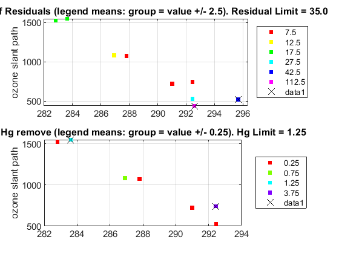 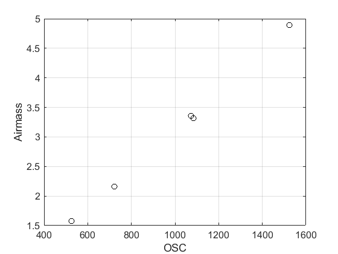 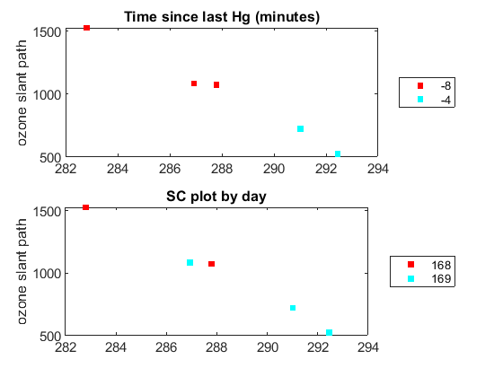 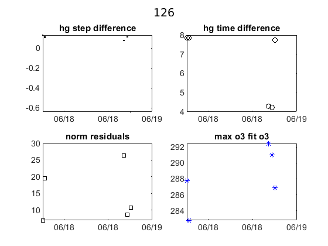 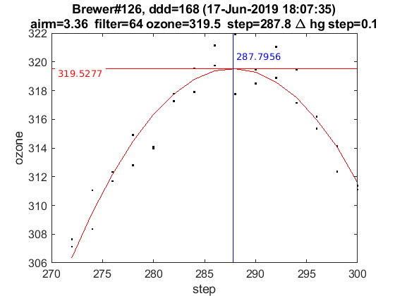 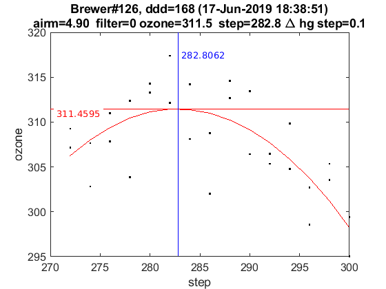 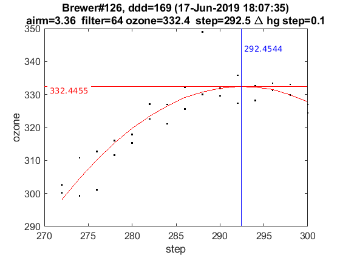 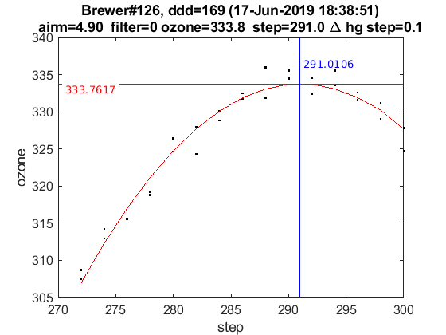 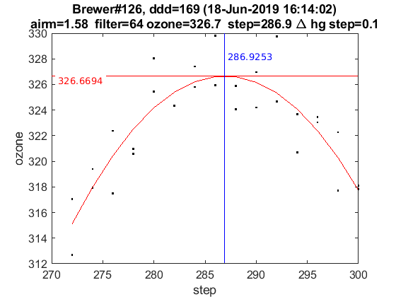 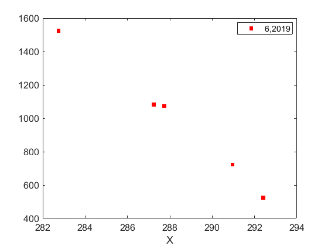 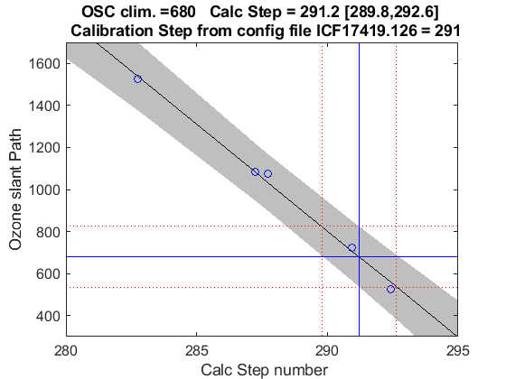
try
ix=sort(findobj('tag','SC_INDIVIDUAL')); figure(ix); set(get(gca,'title'),'FontSize',8);
printfiles_report(ix',Cal.dir_figs,'aux_pattern',ix,'FontSize',.9,'Width',8.5,'Height',7);
ix=sort(findobj('tag','Final_SC_Calculation'));
if length(ix)>1
Width=8; Height=6;
for i=1:length(ix), figure(ix(i)); set(get(gca,'title'),'FontSize',8); end
else
Width=13; Height=8;
end
printfiles_report(ix',Cal.dir_figs,'aux_pattern',ix,'Width',Width,'Height',Height);
catch
disp('No sun_scan');
end
close all
naux =
1
naux =
1
Definicion de variables: SC
if length(cal_step)>1
d_p=[length(cal_step)-1 length(cal_step)]; tags={'','new'};
else
d_p=1; tags={'new'};
end
idx=1; cal_step_error={};
for t=d_p
cal_step_error{t}=round(mean([abs(cal_step{t}(2)-cal_step{t}(3)),abs(cal_step{t}(2)-cal_step{t}(4))]));
latexcmd(fullfile(Cal.file_latex,['cal_wavelengthSC',tags{idx},'_',Cal.brw_str{Cal.n_inst}]),...
['\numSC',tags{idx}],size(sc_avg{t},1),...
['\CALCSTEP',tags{idx}],round(cal_step{t}(1)),...
['\calsteperror',tags{idx}],cal_step_error{t});
idx=idx+1;
end
load(Cal.file_save,'sunscan');
sunscan{Cal.n_inst}.cal_step=cal_step;
sunscan{Cal.n_inst}.cal_step_error=cal_step_error;
sunscan{Cal.n_inst}.sc_avg=sc_avg; sunscan{Cal.n_inst}.sc_raw=sc_raw;
sunscan{Cal.n_inst}.info=Args;
save(Cal.file_save,'-APPEND','sunscan');
dsp calibration
res={}; detail={}; DSP_QUAD={}; QUAD_SUM={}; QUAD_DETAIL={};
CUBIC_SUM={}; CUBIC_DETAIL={}; salida={}; CSN_icf={};
l=dir(fullfile('DSP',[Cal.brw_str{Cal.n_inst},'*']));
ldsp=cellstr(cat(1,l.name));
ldsp=ldsp(end-3:end)
for jj=1:length(ldsp)
if jj==length(ldsp),confign=2; else confign=1; end
try
[res{jj},detail{jj},DSP_QUAD{jj},QUAD_SUM{jj},QUAD_DETAIL{jj},...
CUBIC_SUM{jj},CUBIC_DETAIL{jj},salida{jj},CSN_icf{jj},...
]=dspreport(Cal,'dsp_dir',fullfile('DSP',ldsp{jj}),'config_n',confign);
catch
warning(sprintf('Error en %s. DSP: %s',Cal.brw_name{Cal.n_inst},ldsp{jj}));
res{jj}=NaN*ones(15,9,2); detail{jj}=NaN*ones(7,6,15,2); QUAD_DETAIL{jj}=NaN;
end
datefile =
735400
now:W1016513.126
now:W3016513.126
now:W7016513.126
now:W8016513.126
now:W9016513.126
now:W1116513.126
now:W3116513.126
now:W7116513.126
now:W8116513.126
now:W9116513.126
now:W3216513.126
now:W7216513.126
now:W8216513.126
now:W9216513.126
now:W3316513.126
now:W7316513.126
now:W8316513.126
now:W9316513.126
now:W7416513.126
now:W8416513.126
now:W9416513.126
now:W7516513.126
now:W8516513.126
now:W9516513.126
lines_dsp_16513__126
saving alldsp to DSP/126_13_166/alldsp_16513_126.126
saving normaldsp to DSP/126_13_166/dspnorm_16513_126.126 as brewer compatible file
Use polyval(pwl(2,:),wl) for calculating normal wavelengths
Saving ozonecoeffs to DSP/126_13_166/opos16513_126.126
281 WL(A) 3031.17 3062.26 3099.69 3134.18 3167.16 3199.15
Res(A) 11.29 11.39 10.99 11.60 11.17 10.70
O3abs(1/cm) 2.6262 1.7945 1.0082 0.6774 0.3754 0.2988 O3: 0.3516
Daumt O3abs(1/cm) 2.6334 1.7882 1.0006 0.6703 0.3690 0.2980 O3: 0.3604
So2abs(1/cm) 3.6318 5.3623 2.3329 2.0277 1.0400 0.6363
Bremen O3abs(1/cm) 2.6362 1.7920 1.0062 0.6802 0.3740 0.2994 O3: 0.3522
Nicolet 1e4*Rayabs(1/cm) 5056.0 4837.4 4589.9 4376.0 4183.3 4006.6 R: 9.8835
Bates(fix) 1e4*Rayabs(1/cm) 0.0 4870.0 4620.0 4410.0 4220.0 4040.0 R: -1.0000
Bodhaine 1e4*Rayabs(1/cm) 5052.5 4835.3 4589.4 4376.7 4184.8 4008.9 R: 9.5082
I0(mW m^-2nm^-1) 11741.21 9443.81 7465.34 4939.92 4125.62 3273.60 ETC: 1484
Ozone offset due to Rayleigh (RayCOeff/O3Coeff): -2.8 DU
Ozone offset due to Rayleigh (Bodhaine): -3.0 DU
Ratio Ozone for So2(A3)= 1.1740, So2/O3(A2)= 2.5812
O3 factor from Bass & Paur to Daumont = 0.9757
O3 factor from Bass & Paur to Bremen = 0.9984
282 WL(A) 3031.24 3062.33 3099.76 3134.25 3167.23 3199.21
Res(A) 11.29 11.39 10.99 11.60 11.17 10.70
O3abs(1/cm) 2.6236 1.7932 1.0079 0.6773 0.3753 0.2985 O3: 0.3510
Daumt O3abs(1/cm) 2.6307 1.7870 1.0002 0.6703 0.3688 0.2978 O3: 0.3600
So2abs(1/cm) 3.6116 5.3895 2.3383 2.0177 1.0412 0.6346
Bremen O3abs(1/cm) 2.6335 1.7907 1.0058 0.6801 0.3739 0.2992 O3: 0.3517
Nicolet 1e4*Rayabs(1/cm) 5055.5 4836.9 4589.4 4375.6 4182.9 4006.3 R: 9.8809
Bates(fix) 1e4*Rayabs(1/cm) 0.0 4870.0 4620.0 4410.0 4220.0 4040.0 R: -1.0000
Bodhaine 1e4*Rayabs(1/cm) 5052.0 4834.9 4588.9 4376.3 4184.5 4008.5 R: 9.5034
I0(mW m^-2nm^-1) 11735.25 9438.01 7441.67 4936.38 4116.26 3268.14 ETC: 1474
Ozone offset due to Rayleigh (RayCOeff/O3Coeff): -2.8 DU
Ozone offset due to Rayleigh (Bodhaine): -3.0 DU
Ratio Ozone for So2(A3)= 1.1721, So2/O3(A2)= 2.6000
O3 factor from Bass & Paur to Daumont = 0.9752
O3 factor from Bass & Paur to Bremen = 0.9980
283 WL(A) 3031.31 3062.40 3099.83 3134.32 3167.30 3199.28
Res(A) 11.29 11.39 10.99 11.60 11.17 10.70
O3abs(1/cm) 2.6211 1.7919 1.0076 0.6772 0.3753 0.2982 O3: 0.3504
Daumt O3abs(1/cm) 2.6280 1.7858 0.9998 0.6703 0.3687 0.2977 O3: 0.3595
So2abs(1/cm) 3.5913 5.4167 2.3440 2.0076 1.0424 0.6329
Bremen O3abs(1/cm) 2.6309 1.7894 1.0054 0.6801 0.3738 0.2990 O3: 0.3512
Nicolet 1e4*Rayabs(1/cm) 5055.0 4836.4 4589.0 4375.2 4182.5 4005.9 R: 9.8783
Bates(fix) 1e4*Rayabs(1/cm) 0.0 4870.0 4620.0 4410.0 4220.0 4040.0 R: -1.0000
Bodhaine 1e4*Rayabs(1/cm) 5051.5 4834.4 4588.5 4375.9 4184.1 4008.2 R: 9.5037
I0(mW m^-2nm^-1) 11729.30 9432.21 7418.13 4933.01 4106.92 3262.68 ETC: 1463
Ozone offset due to Rayleigh (RayCOeff/O3Coeff): -2.8 DU
Ozone offset due to Rayleigh (Bodhaine): -3.0 DU
Ratio Ozone for So2(A3)= 1.1699, So2/O3(A2)= 2.6191
O3 factor from Bass & Paur to Daumont = 0.9747
O3 factor from Bass & Paur to Bremen = 0.9976
284 WL(A) 3031.38 3062.47 3099.90 3134.39 3167.36 3199.35
Res(A) 11.29 11.39 10.99 11.60 11.17 10.70
O3abs(1/cm) 2.6185 1.7905 1.0073 0.6770 0.3752 0.2978 O3: 0.3497
Daumt O3abs(1/cm) 2.6253 1.7846 0.9995 0.6703 0.3686 0.2975 O3: 0.3590
So2abs(1/cm) 3.5711 5.4418 2.3502 1.9971 1.0435 0.6311
Bremen O3abs(1/cm) 2.6283 1.7881 1.0050 0.6801 0.3737 0.2987 O3: 0.3506
Nicolet 1e4*Rayabs(1/cm) 5054.5 4835.9 4588.6 4374.8 4182.2 4005.6 R: 9.8757
Bates(fix) 1e4*Rayabs(1/cm) 0.0 4870.0 4620.0 4410.0 4220.0 4040.0 R: -1.0000
Bodhaine 1e4*Rayabs(1/cm) 5051.0 4833.9 4588.1 4375.4 4183.7 4007.8 R: 9.5014
I0(mW m^-2nm^-1) 11723.36 9426.43 7394.71 4929.65 4097.59 3257.84 ETC: 1454
Ozone offset due to Rayleigh (RayCOeff/O3Coeff): -2.8 DU
Ozone offset due to Rayleigh (Bodhaine): -3.0 DU
Ratio Ozone for So2(A3)= 1.1676, So2/O3(A2)= 2.6366
O3 factor from Bass & Paur to Daumont = 0.9741
O3 factor from Bass & Paur to Bremen = 0.9972
285 WL(A) 3031.45 3062.54 3099.97 3134.46 3167.43 3199.41
Res(A) 11.29 11.39 10.99 11.60 11.17 10.70
O3abs(1/cm) 2.6158 1.7891 1.0070 0.6768 0.3752 0.2975 O3: 0.3490
Daumt O3abs(1/cm) 2.6227 1.7833 0.9991 0.6703 0.3686 0.2972 O3: 0.3584
So2abs(1/cm) 3.5514 5.4669 2.3564 1.9866 1.0447 0.6293
Bremen O3abs(1/cm) 2.6258 1.7868 1.0047 0.6800 0.3737 0.2985 O3: 0.3501
Nicolet 1e4*Rayabs(1/cm) 5054.0 4835.5 4588.1 4374.4 4181.8 4005.2 R: 9.8731
Bates(fix) 1e4*Rayabs(1/cm) 0.0 4870.0 4620.0 4410.0 4220.0 4040.0 R: -1.0000
Bodhaine 1e4*Rayabs(1/cm) 5050.5 4833.5 4587.6 4375.0 4183.3 4007.5 R: 9.4958
I0(mW m^-2nm^-1) 11717.42 9420.65 7371.42 4926.29 4088.29 3253.27 ETC: 1445
Ozone offset due to Rayleigh (RayCOeff/O3Coeff): -2.8 DU
Ozone offset due to Rayleigh (Bodhaine): -3.0 DU
Ratio Ozone for So2(A3)= 1.1653, So2/O3(A2)= 2.6541
O3 factor from Bass & Paur to Daumont = 0.9736
O3 factor from Bass & Paur to Bremen = 0.9969
286 WL(A) 3031.52 3062.61 3100.04 3134.52 3167.50 3199.48
Res(A) 11.29 11.39 10.99 11.60 11.17 10.70
O3abs(1/cm) 2.6131 1.7877 1.0068 0.6767 0.3751 0.2972 O3: 0.3483
Daumt O3abs(1/cm) 2.6201 1.7821 0.9987 0.6702 0.3685 0.2970 O3: 0.3578
So2abs(1/cm) 3.5334 5.4916 2.3625 1.9761 1.0459 0.6274
Bremen O3abs(1/cm) 2.6232 1.7854 1.0043 0.6799 0.3736 0.2982 O3: 0.3494
Nicolet 1e4*Rayabs(1/cm) 5053.4 4835.0 4587.7 4374.0 4181.4 4004.8 R: 9.8705
Bates(fix) 1e4*Rayabs(1/cm) 0.0 4870.0 4620.0 4410.0 4220.0 4040.0 R: -1.0000
Bodhaine 1e4*Rayabs(1/cm) 5050.0 4833.0 4587.2 4374.6 4183.0 4007.1 R: 9.4959
I0(mW m^-2nm^-1) 11711.50 9414.88 7348.24 4922.94 4079.01 3248.60 ETC: 1436
Ozone offset due to Rayleigh (RayCOeff/O3Coeff): -2.8 DU
Ozone offset due to Rayleigh (Bodhaine): -3.0 DU
Ratio Ozone for So2(A3)= 1.1631, So2/O3(A2)= 2.6712
O3 factor from Bass & Paur to Daumont = 0.9733
O3 factor from Bass & Paur to Bremen = 0.9967
287 WL(A) 3031.59 3062.68 3100.11 3134.59 3167.56 3199.54
Res(A) 11.29 11.39 10.99 11.60 11.17 10.70
O3abs(1/cm) 2.6104 1.7863 1.0065 0.6765 0.3751 0.2968 O3: 0.3476
Daumt O3abs(1/cm) 2.6175 1.7808 0.9984 0.6702 0.3685 0.2968 O3: 0.3572
So2abs(1/cm) 3.5155 5.5161 2.3688 1.9659 1.0470 0.6255
Bremen O3abs(1/cm) 2.6207 1.7840 1.0040 0.6798 0.3736 0.2980 O3: 0.3488
Nicolet 1e4*Rayabs(1/cm) 5052.9 4834.5 4587.3 4373.6 4181.0 4004.5 R: 9.8679
Bates(fix) 1e4*Rayabs(1/cm) 0.0 4870.0 4620.0 4410.0 4220.0 4040.0 R: -1.0000
Bodhaine 1e4*Rayabs(1/cm) 5049.5 4832.5 4586.8 4374.2 4182.6 4006.8 R: 9.4946
I0(mW m^-2nm^-1) 11705.58 9409.11 7325.19 4919.59 4069.74 3243.82 ETC: 1426
Ozone offset due to Rayleigh (RayCOeff/O3Coeff): -2.8 DU
Ozone offset due to Rayleigh (Bodhaine): -3.0 DU
Ratio Ozone for So2(A3)= 1.1608, So2/O3(A2)= 2.6880
O3 factor from Bass & Paur to Daumont = 0.9731
O3 factor from Bass & Paur to Bremen = 0.9967
288 WL(A) 3031.66 3062.75 3100.17 3134.66 3167.63 3199.61
Res(A) 11.29 11.39 10.99 11.60 11.17 10.70
O3abs(1/cm) 2.6077 1.7850 1.0062 0.6764 0.3751 0.2965 O3: 0.3468
Daumt O3abs(1/cm) 2.6149 1.7795 0.9980 0.6701 0.3684 0.2965 O3: 0.3565
So2abs(1/cm) 3.4976 5.5391 2.3757 1.9551 1.0482 0.6236
Bremen O3abs(1/cm) 2.6182 1.7827 1.0036 0.6797 0.3735 0.2977 O3: 0.3481
Nicolet 1e4*Rayabs(1/cm) 5052.4 4834.0 4586.8 4373.2 4180.6 4004.1 R: 9.8653
Bates(fix) 1e4*Rayabs(1/cm) 0.0 4870.0 4620.0 4410.0 4220.0 4040.0 R: -1.0000
Bodhaine 1e4*Rayabs(1/cm) 5049.0 4832.0 4586.3 4373.8 4182.2 4006.4 R: 9.4882
I0(mW m^-2nm^-1) 11699.67 9403.36 7302.26 4916.24 4060.50 3238.93 ETC: 1417
Ozone offset due to Rayleigh (RayCOeff/O3Coeff): -2.8 DU
Ozone offset due to Rayleigh (Bodhaine): -3.0 DU
Ratio Ozone for So2(A3)= 1.1584, So2/O3(A2)= 2.7038
O3 factor from Bass & Paur to Daumont = 0.9728
O3 factor from Bass & Paur to Bremen = 0.9965
289 WL(A) 3031.73 3062.82 3100.24 3134.73 3167.70 3199.68
Res(A) 11.29 11.39 10.99 11.60 11.17 10.70
O3abs(1/cm) 2.6053 1.7836 1.0059 0.6762 0.3751 0.2961 O3: 0.3460
Daumt O3abs(1/cm) 2.6123 1.7782 0.9977 0.6700 0.3684 0.2962 O3: 0.3558
So2abs(1/cm) 3.4801 5.5613 2.3827 1.9443 1.0494 0.6216
Bremen O3abs(1/cm) 2.6158 1.7812 1.0033 0.6795 0.3735 0.2974 O3: 0.3473
Nicolet 1e4*Rayabs(1/cm) 5051.9 4833.6 4586.4 4372.8 4180.3 4003.8 R: 9.8627
Bates(fix) 1e4*Rayabs(1/cm) 0.0 4870.0 4620.0 4410.0 4220.0 4040.0 R: -1.0000
Bodhaine 1e4*Rayabs(1/cm) 5048.5 4831.6 4585.9 4373.4 4181.8 4006.1 R: 9.4881
I0(mW m^-2nm^-1) 11693.77 9397.61 7279.45 4912.89 4051.27 3232.08 ETC: 1405
Ozone offset due to Rayleigh (RayCOeff/O3Coeff): -2.9 DU
Ozone offset due to Rayleigh (Bodhaine): -3.0 DU
Ratio Ozone for So2(A3)= 1.1559, So2/O3(A2)= 2.7193
O3 factor from Bass & Paur to Daumont = 0.9724
O3 factor from Bass & Paur to Bremen = 0.9962
290 WL(A) 3031.80 3062.89 3100.31 3134.79 3167.77 3199.74
Res(A) 11.29 11.39 10.99 11.60 11.17 10.70
O3abs(1/cm) 2.6029 1.7821 1.0056 0.6759 0.3751 0.2957 O3: 0.3451
Daumt O3abs(1/cm) 2.6098 1.7768 0.9973 0.6699 0.3684 0.2959 O3: 0.3551
So2abs(1/cm) 3.4641 5.5833 2.3896 1.9335 1.0505 0.6196
Bremen O3abs(1/cm) 2.6133 1.7798 1.0029 0.6794 0.3735 0.2971 O3: 0.3466
Nicolet 1e4*Rayabs(1/cm) 5051.4 4833.1 4585.9 4372.3 4179.9 4003.4 R: 9.8601
Bates(fix) 1e4*Rayabs(1/cm) 0.0 4870.0 4620.0 4410.0 4220.0 4040.0 R: -1.0000
Bodhaine 1e4*Rayabs(1/cm) 5048.0 4831.1 4585.4 4373.0 4181.4 4005.7 R: 9.4872
I0(mW m^-2nm^-1) 11687.87 9391.86 7256.75 4909.54 4042.06 3222.56 ETC: 1388
Ozone offset due to Rayleigh (RayCOeff/O3Coeff): -2.9 DU
Ozone offset due to Rayleigh (Bodhaine): -3.0 DU
Ratio Ozone for So2(A3)= 1.1528, So2/O3(A2)= 2.7356
O3 factor from Bass & Paur to Daumont = 0.9718
O3 factor from Bass & Paur to Bremen = 0.9958
291 WL(A) 3031.87 3062.95 3100.38 3134.86 3167.83 3199.81
Res(A) 11.29 11.39 10.99 11.60 11.17 10.70
O3abs(1/cm) 2.6006 1.7805 1.0053 0.6755 0.3751 0.2952 O3: 0.3441
Daumt O3abs(1/cm) 2.6073 1.7755 0.9970 0.6697 0.3684 0.2956 O3: 0.3543
So2abs(1/cm) 3.4485 5.6049 2.3966 1.9230 1.0517 0.6176
Bremen O3abs(1/cm) 2.6109 1.7784 1.0026 0.6792 0.3735 0.2968 O3: 0.3458
Nicolet 1e4*Rayabs(1/cm) 5050.9 4832.6 4585.5 4371.9 4179.5 4003.1 R: 9.8575
Bates(fix) 1e4*Rayabs(1/cm) 0.0 4870.0 4620.0 4410.0 4220.0 4040.0 R: -1.0000
Bodhaine 1e4*Rayabs(1/cm) 5047.5 4830.6 4585.0 4372.6 4181.1 4005.4 R: 9.4805
I0(mW m^-2nm^-1) 11681.99 9386.13 7234.17 4906.20 4032.88 3213.06 ETC: 1371
Ozone offset due to Rayleigh (RayCOeff/O3Coeff): -2.9 DU
Ozone offset due to Rayleigh (Bodhaine): -3.0 DU
Ratio Ozone for So2(A3)= 1.1497, So2/O3(A2)= 2.7520
O3 factor from Bass & Paur to Daumont = 0.9713
O3 factor from Bass & Paur to Bremen = 0.9953
saving powfiu7 to DSP/126_13_166/dsp_16513_126.126
freecoef =
3
freecoef =
8
freecoef =
8
freecoef =
8
freecoef =
8
freecoef =
8
freecoef =
8
freecoef =
8
freecoef =
8
freecoef =
8
saving data to file:DSP/126_13_166/dsp_16513_126.126
Use brstps2 to calculate steps and wavelengths
Saving ozonecoeffs to DSP/126_13_166/opos_pow7_16513_126.126
281 WL(A) 3031.24 3062.23 3099.68 3134.15 3167.15 3199.07
Res(A) 11.29 11.39 10.99 11.60 11.18 10.71
O3abs(1/cm) 2.6236 1.7950 1.0083 0.6774 0.3754 0.2990 O3: 0.3520
Daumt O3abs(1/cm) 2.6307 1.7887 1.0007 0.6703 0.3690 0.2982 O3: 0.3607
So2abs(1/cm) 3.6116 5.3522 2.3317 2.0327 1.0397 0.6382
Bremen O3abs(1/cm) 2.6335 1.7925 1.0063 0.6802 0.3740 0.2995 O3: 0.3525
Nicolet 1e4*Rayabs(1/cm) 5055.5 4837.5 4590.0 4376.2 4183.4 4007.0 R: 10.3547
Bates(fix) 1e4*Rayabs(1/cm) 0.0 4870.0 4620.0 4410.0 4220.0 4040.0 R: -1.0000
Bodhaine 1e4*Rayabs(1/cm) 5052.0 4835.5 4589.5 4376.9 4184.9 4009.3 R: 9.9760
I0(mW m^-2nm^-1) 11735.09 9445.97 7470.39 4941.09 4127.96 3280.06 ETC: 1494
Ozone offset due to Rayleigh (RayCOeff/O3Coeff): -2.9 DU
Ozone offset due to Rayleigh (Bodhaine): -3.1 DU
Ratio Ozone for So2(A3)= 1.1751, So2/O3(A2)= 2.5764
O3 factor from Bass & Paur to Daumont = 0.9760
O3 factor from Bass & Paur to Bremen = 0.9986
282 WL(A) 3031.31 3062.30 3099.75 3134.22 3167.21 3199.14
Res(A) 11.29 11.39 10.99 11.60 11.18 10.71
O3abs(1/cm) 2.6211 1.7938 1.0080 0.6774 0.3753 0.2988 O3: 0.3515
Daumt O3abs(1/cm) 2.6280 1.7875 1.0003 0.6703 0.3689 0.2980 O3: 0.3603
So2abs(1/cm) 3.5913 5.3796 2.3371 2.0226 1.0409 0.6365
Bremen O3abs(1/cm) 2.6309 1.7912 1.0059 0.6802 0.3739 0.2994 O3: 0.3521
Nicolet 1e4*Rayabs(1/cm) 5055.0 4837.1 4589.5 4375.8 4183.0 4006.7 R: 10.3523
Bates(fix) 1e4*Rayabs(1/cm) 0.0 4870.0 4620.0 4410.0 4220.0 4040.0 R: -1.0000
Bodhaine 1e4*Rayabs(1/cm) 5051.5 4835.1 4589.0 4376.5 4184.6 4008.9 R: 9.9740
I0(mW m^-2nm^-1) 11729.14 9440.17 7446.70 4938.26 4118.61 3274.59 ETC: 1483
Ozone offset due to Rayleigh (RayCOeff/O3Coeff): -2.9 DU
Ozone offset due to Rayleigh (Bodhaine): -3.1 DU
Ratio Ozone for So2(A3)= 1.1735, So2/O3(A2)= 2.5945
O3 factor from Bass & Paur to Daumont = 0.9758
O3 factor from Bass & Paur to Bremen = 0.9986
283 WL(A) 3031.38 3062.37 3099.82 3134.29 3167.28 3199.20
Res(A) 11.29 11.39 10.99 11.60 11.18 10.71
O3abs(1/cm) 2.6185 1.7924 1.0077 0.6772 0.3753 0.2985 O3: 0.3509
Daumt O3abs(1/cm) 2.6253 1.7863 0.9999 0.6703 0.3688 0.2979 O3: 0.3598
So2abs(1/cm) 3.5711 5.4068 2.3427 2.0126 1.0421 0.6348
Bremen O3abs(1/cm) 2.6283 1.7899 1.0055 0.6801 0.3738 0.2992 O3: 0.3516
Nicolet 1e4*Rayabs(1/cm) 5054.5 4836.6 4589.1 4375.4 4182.6 4006.3 R: 10.3499
Bates(fix) 1e4*Rayabs(1/cm) 0.0 4870.0 4620.0 4410.0 4220.0 4040.0 R: -1.0000
Bodhaine 1e4*Rayabs(1/cm) 5051.0 4834.6 4588.6 4376.1 4184.2 4008.6 R: 9.9745
I0(mW m^-2nm^-1) 11723.20 9434.37 7423.14 4934.67 4109.27 3269.13 ETC: 1473
Ozone offset due to Rayleigh (RayCOeff/O3Coeff): -2.9 DU
Ozone offset due to Rayleigh (Bodhaine): -3.1 DU
Ratio Ozone for So2(A3)= 1.1714, So2/O3(A2)= 2.6136
O3 factor from Bass & Paur to Daumont = 0.9753
O3 factor from Bass & Paur to Bremen = 0.9982
284 WL(A) 3031.45 3062.44 3099.88 3134.35 3167.35 3199.27
Res(A) 11.29 11.39 10.99 11.60 11.18 10.71
O3abs(1/cm) 2.6158 1.7910 1.0074 0.6771 0.3752 0.2982 O3: 0.3503
Daumt O3abs(1/cm) 2.6227 1.7850 0.9995 0.6703 0.3687 0.2977 O3: 0.3593
So2abs(1/cm) 3.5514 5.4326 2.3489 2.0022 1.0432 0.6331
Bremen O3abs(1/cm) 2.6257 1.7886 1.0051 0.6801 0.3738 0.2990 O3: 0.3510
Nicolet 1e4*Rayabs(1/cm) 5053.9 4836.1 4588.7 4375.0 4182.2 4006.0 R: 10.3475
Bates(fix) 1e4*Rayabs(1/cm) 0.0 4870.0 4620.0 4410.0 4220.0 4040.0 R: -1.0000
Bodhaine 1e4*Rayabs(1/cm) 5050.5 4834.1 4588.2 4375.6 4183.8 4008.2 R: 9.9691
I0(mW m^-2nm^-1) 11717.27 9428.58 7399.70 4931.31 4099.95 3263.68 ETC: 1462
Ozone offset due to Rayleigh (RayCOeff/O3Coeff): -3.0 DU
Ozone offset due to Rayleigh (Bodhaine): -3.1 DU
Ratio Ozone for So2(A3)= 1.1692, So2/O3(A2)= 2.6318
O3 factor from Bass & Paur to Daumont = 0.9748
O3 factor from Bass & Paur to Bremen = 0.9978
285 WL(A) 3031.52 3062.51 3099.95 3134.42 3167.41 3199.34
Res(A) 11.29 11.39 10.99 11.60 11.18 10.71
O3abs(1/cm) 2.6131 1.7896 1.0071 0.6769 0.3752 0.2979 O3: 0.3496
Daumt O3abs(1/cm) 2.6200 1.7838 0.9992 0.6703 0.3686 0.2975 O3: 0.3588
So2abs(1/cm) 3.5334 5.4577 2.3550 1.9917 1.0444 0.6313
Bremen O3abs(1/cm) 2.6232 1.7873 1.0048 0.6800 0.3737 0.2988 O3: 0.3505
Nicolet 1e4*Rayabs(1/cm) 5053.4 4835.6 4588.2 4374.6 4181.9 4005.6 R: 10.3452
Bates(fix) 1e4*Rayabs(1/cm) 0.0 4870.0 4620.0 4410.0 4220.0 4040.0 R: -1.0000
Bodhaine 1e4*Rayabs(1/cm) 5050.0 4833.6 4587.7 4375.2 4183.4 4007.9 R: 9.9670
I0(mW m^-2nm^-1) 11711.35 9422.80 7376.39 4927.95 4090.65 3258.71 ETC: 1453
Ozone offset due to Rayleigh (RayCOeff/O3Coeff): -3.0 DU
Ozone offset due to Rayleigh (Bodhaine): -3.1 DU
Ratio Ozone for So2(A3)= 1.1669, So2/O3(A2)= 2.6494
O3 factor from Bass & Paur to Daumont = 0.9742
O3 factor from Bass & Paur to Bremen = 0.9974
286 WL(A) 3031.59 3062.58 3100.02 3134.49 3167.48 3199.40
Res(A) 11.29 11.39 10.99 11.60 11.18 10.71
O3abs(1/cm) 2.6104 1.7882 1.0068 0.6768 0.3752 0.2975 O3: 0.3489
Daumt O3abs(1/cm) 2.6174 1.7825 0.9988 0.6703 0.3685 0.2973 O3: 0.3582
So2abs(1/cm) 3.5155 5.4826 2.3612 1.9812 1.0456 0.6295
Bremen O3abs(1/cm) 2.6207 1.7859 1.0044 0.6800 0.3736 0.2985 O3: 0.3499
Nicolet 1e4*Rayabs(1/cm) 5052.9 4835.2 4587.8 4374.2 4181.5 4005.2 R: 10.3428
Bates(fix) 1e4*Rayabs(1/cm) 0.0 4870.0 4620.0 4410.0 4220.0 4040.0 R: -1.0000
Bodhaine 1e4*Rayabs(1/cm) 5049.5 4833.2 4587.3 4374.8 4183.0 4007.5 R: 9.9677
I0(mW m^-2nm^-1) 11705.43 9417.02 7353.20 4924.59 4081.37 3254.17 ETC: 1444
Ozone offset due to Rayleigh (RayCOeff/O3Coeff): -3.0 DU
Ozone offset due to Rayleigh (Bodhaine): -3.1 DU
Ratio Ozone for So2(A3)= 1.1646, So2/O3(A2)= 2.6667
O3 factor from Bass & Paur to Daumont = 0.9739
O3 factor from Bass & Paur to Bremen = 0.9971
287 WL(A) 3031.66 3062.65 3100.09 3134.56 3167.55 3199.47
Res(A) 11.29 11.39 10.99 11.60 11.18 10.71
O3abs(1/cm) 2.6077 1.7868 1.0065 0.6766 0.3751 0.2972 O3: 0.3482
Daumt O3abs(1/cm) 2.6149 1.7813 0.9985 0.6702 0.3685 0.2970 O3: 0.3576
So2abs(1/cm) 3.4976 5.5072 2.3674 1.9709 1.0467 0.6277
Bremen O3abs(1/cm) 2.6182 1.7846 1.0040 0.6799 0.3736 0.2983 O3: 0.3492
Nicolet 1e4*Rayabs(1/cm) 5052.4 4834.7 4587.3 4373.8 4181.1 4004.9 R: 10.3405
Bates(fix) 1e4*Rayabs(1/cm) 0.0 4870.0 4620.0 4410.0 4220.0 4040.0 R: -1.0000
Bodhaine 1e4*Rayabs(1/cm) 5049.0 4832.7 4586.9 4374.4 4182.7 4007.2 R: 9.9623
I0(mW m^-2nm^-1) 11699.53 9411.25 7330.13 4921.24 4072.11 3249.52 ETC: 1435
Ozone offset due to Rayleigh (RayCOeff/O3Coeff): -3.0 DU
Ozone offset due to Rayleigh (Bodhaine): -3.1 DU
Ratio Ozone for So2(A3)= 1.1624, So2/O3(A2)= 2.6837
O3 factor from Bass & Paur to Daumont = 0.9736
O3 factor from Bass & Paur to Bremen = 0.9970
288 WL(A) 3031.73 3062.72 3100.16 3134.63 3167.62 3199.54
Res(A) 11.29 11.39 10.99 11.60 11.18 10.71
O3abs(1/cm) 2.6053 1.7855 1.0062 0.6764 0.3751 0.2969 O3: 0.3475
Daumt O3abs(1/cm) 2.6123 1.7800 0.9981 0.6701 0.3684 0.2968 O3: 0.3570
So2abs(1/cm) 3.4801 5.5310 2.3742 1.9604 1.0479 0.6258
Bremen O3abs(1/cm) 2.6157 1.7832 1.0037 0.6797 0.3736 0.2980 O3: 0.3486
Nicolet 1e4*Rayabs(1/cm) 5051.9 4834.2 4586.9 4373.4 4180.7 4004.5 R: 10.3381
Bates(fix) 1e4*Rayabs(1/cm) 0.0 4870.0 4620.0 4410.0 4220.0 4040.0 R: -1.0000
Bodhaine 1e4*Rayabs(1/cm) 5048.4 4832.2 4586.4 4374.0 4182.3 4006.8 R: 9.9600
I0(mW m^-2nm^-1) 11693.63 9405.49 7307.18 4917.88 4062.86 3244.76 ETC: 1426
Ozone offset due to Rayleigh (RayCOeff/O3Coeff): -3.0 DU
Ozone offset due to Rayleigh (Bodhaine): -3.2 DU
Ratio Ozone for So2(A3)= 1.1600, So2/O3(A2)= 2.7000
O3 factor from Bass & Paur to Daumont = 0.9733
O3 factor from Bass & Paur to Bremen = 0.9968
289 WL(A) 3031.80 3062.79 3100.23 3134.69 3167.68 3199.60
Res(A) 11.29 11.39 10.99 11.60 11.18 10.71
O3abs(1/cm) 2.6029 1.7842 1.0059 0.6763 0.3751 0.2965 O3: 0.3467
Daumt O3abs(1/cm) 2.6098 1.7787 0.9978 0.6700 0.3684 0.2965 O3: 0.3564
So2abs(1/cm) 3.4641 5.5532 2.3812 1.9496 1.0491 0.6239
Bremen O3abs(1/cm) 2.6133 1.7818 1.0033 0.6796 0.3735 0.2977 O3: 0.3479
Nicolet 1e4*Rayabs(1/cm) 5051.4 4833.7 4586.5 4373.0 4180.3 4004.2 R: 10.3357
Bates(fix) 1e4*Rayabs(1/cm) 0.0 4870.0 4620.0 4410.0 4220.0 4040.0 R: -1.0000
Bodhaine 1e4*Rayabs(1/cm) 5047.9 4831.7 4586.0 4373.6 4181.9 4006.5 R: 9.9609
I0(mW m^-2nm^-1) 11687.73 9399.74 7284.35 4914.54 4053.64 3239.89 ETC: 1417
Ozone offset due to Rayleigh (RayCOeff/O3Coeff): -3.0 DU
Ozone offset due to Rayleigh (Bodhaine): -3.2 DU
Ratio Ozone for So2(A3)= 1.1576, So2/O3(A2)= 2.7153
O3 factor from Bass & Paur to Daumont = 0.9729
O3 factor from Bass & Paur to Bremen = 0.9966
290 WL(A) 3031.87 3062.86 3100.30 3134.76 3167.75 3199.67
Res(A) 11.29 11.39 10.99 11.60 11.18 10.71
O3abs(1/cm) 2.6005 1.7827 1.0057 0.6760 0.3751 0.2962 O3: 0.3459
Daumt O3abs(1/cm) 2.6073 1.7773 0.9974 0.6699 0.3684 0.2962 O3: 0.3556
So2abs(1/cm) 3.4485 5.5754 2.3882 1.9389 1.0502 0.6219
Bremen O3abs(1/cm) 2.6109 1.7804 1.0030 0.6794 0.3735 0.2974 O3: 0.3471
Nicolet 1e4*Rayabs(1/cm) 5050.9 4833.3 4586.0 4372.5 4180.0 4003.8 R: 10.3334
Bates(fix) 1e4*Rayabs(1/cm) 0.0 4870.0 4620.0 4410.0 4220.0 4040.0 R: -1.0000
Bodhaine 1e4*Rayabs(1/cm) 5047.4 4831.3 4585.5 4373.2 4181.5 4006.1 R: 9.9558
I0(mW m^-2nm^-1) 11681.85 9393.99 7261.63 4911.19 4044.44 3233.39 ETC: 1405
Ozone offset due to Rayleigh (RayCOeff/O3Coeff): -3.0 DU
Ozone offset due to Rayleigh (Bodhaine): -3.2 DU
Ratio Ozone for So2(A3)= 1.1549, So2/O3(A2)= 2.7312
O3 factor from Bass & Paur to Daumont = 0.9726
O3 factor from Bass & Paur to Bremen = 0.9964
291 WL(A) 3031.94 3062.93 3100.37 3134.83 3167.82 3199.73
Res(A) 11.29 11.39 10.99 11.60 11.18 10.71
O3abs(1/cm) 2.5980 1.7811 1.0054 0.6757 0.3751 0.2957 O3: 0.3450
Daumt O3abs(1/cm) 2.6048 1.7760 0.9971 0.6698 0.3684 0.2960 O3: 0.3549
So2abs(1/cm) 3.4332 5.5970 2.3951 1.9282 1.0514 0.6198
Bremen O3abs(1/cm) 2.6085 1.7789 1.0027 0.6793 0.3735 0.2971 O3: 0.3464
Nicolet 1e4*Rayabs(1/cm) 5050.4 4832.8 4585.6 4372.1 4179.6 4003.5 R: 10.3310
Bates(fix) 1e4*Rayabs(1/cm) 0.0 4870.0 4620.0 4410.0 4220.0 4040.0 R: -1.0000
Bodhaine 1e4*Rayabs(1/cm) 5046.9 4830.8 4585.1 4372.8 4181.2 4005.8 R: 9.9530
I0(mW m^-2nm^-1) 11675.97 9388.25 7239.04 4907.84 4035.25 3223.88 ETC: 1388
Ozone offset due to Rayleigh (RayCOeff/O3Coeff): -3.0 DU
Ozone offset due to Rayleigh (Bodhaine): -3.2 DU
Ratio Ozone for So2(A3)= 1.1519, So2/O3(A2)= 2.7474
O3 factor from Bass & Paur to Daumont = 0.9720
O3 factor from Bass & Paur to Bremen = 0.9960
Warning: The EraseMode property is no longer supported and will error
in a future release.
Warning: The EraseMode property is no longer supported and will error
in a future release.
Warning: The EraseMode property is no longer supported and will error
in a future release.
Warning: The EraseMode property is no longer supported and will error
in a future release.
Warning: The EraseMode property is no longer supported and will error
in a future release.
Warning: The EraseMode property is no longer supported and will error
in a future release.
Warning: The EraseMode property is no longer supported and will error
in a future release.
Warning: The EraseMode property is no longer supported and will error
in a future release.
Warning: The EraseMode property is no longer supported and will error
in a future release.
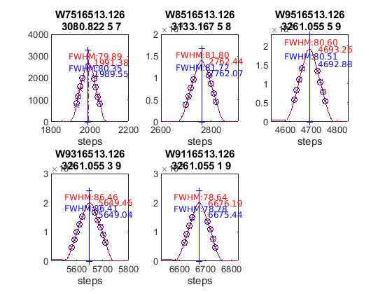 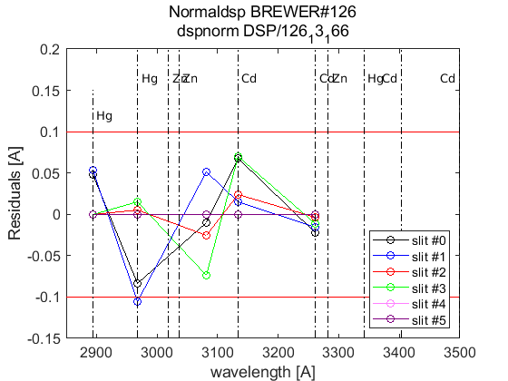 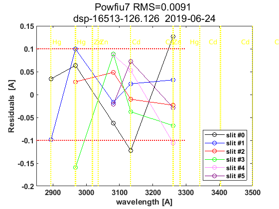 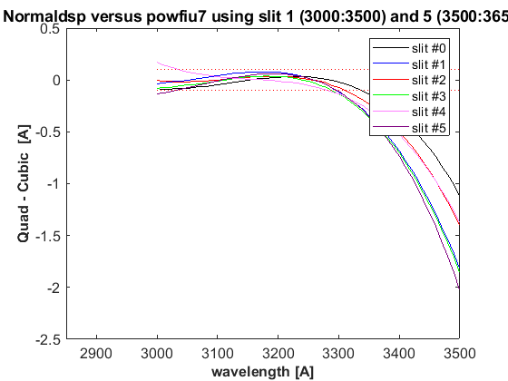

datefile =
736116
now:W1015215.126
now:W3015215.126
now:W7015215.126
now:W8015215.126
now:W1115215.126
now:W3115215.126
now:W7115215.126
now:W8115215.126
now:W9115215.126
now:W1215215.126
now:W3215215.126
now:W7215215.126
now:W8215215.126
now:W9215215.126
now:W3315215.126
now:W7315215.126
now:W8315215.126
now:W9315215.126
now:W3415215.126
now:W7415215.126
now:W8415215.126
now:W9415215.126
now:W3515215.126
now:W7515215.126
now:W8515215.126
now:W9515215.126
lines_dsp_15115__126
saving alldsp to DSP/126_15_152/alldsp_15115_126.126
eliminamos la linea slit 5 3080.822000 -0.122453
eliminamos la linea slit 3 2967.280000 -0.177399
saving normaldsp to DSP/126_15_152/dspnorm_15115_126.126 as brewer compatible file
Use polyval(pwl(2,:),wl) for calculating normal wavelengths
Saving ozonecoeffs to DSP/126_15_152/opos15115_126.126
281 WL(A) 3031.37 3062.39 3099.87 3134.44 3167.34 3199.40
Res(A) 11.47 11.40 11.17 11.23 11.21 11.10
O3abs(1/cm) 2.6194 1.7919 1.0075 0.6779 0.3753 0.2968 O3: 0.3475
Daumt O3abs(1/cm) 2.6264 1.7859 0.9997 0.6711 0.3687 0.2966 O3: 0.3571
So2abs(1/cm) 3.5851 5.4148 2.3513 1.9911 1.0431 0.6279
Bremen O3abs(1/cm) 2.6293 1.7895 1.0053 0.6809 0.3738 0.2979 O3: 0.3488
Nicolet 1e4*Rayabs(1/cm) 5054.6 4836.4 4588.7 4374.5 4182.3 4005.3 R: 9.3962
Bates(fix) 1e4*Rayabs(1/cm) 0.0 4870.0 4620.0 4410.0 4220.0 4040.0 R: -1.0000
Bodhaine 1e4*Rayabs(1/cm) 5051.1 4834.4 4588.2 4375.1 4183.9 4007.5 R: 9.0259
I0(mW m^-2nm^-1) 11721.80 9432.51 7391.28 4926.62 4100.95 3264.65 ETC: 1456
Ozone offset due to Rayleigh (RayCOeff/O3Coeff): -2.7 DU
Ozone offset due to Rayleigh (Bodhaine): -2.9 DU
Ratio Ozone for So2(A3)= 1.1656, So2/O3(A2)= 2.6108
O3 factor from Bass & Paur to Daumont = 0.9731
O3 factor from Bass & Paur to Bremen = 0.9963
282 WL(A) 3031.44 3062.46 3099.94 3134.51 3167.41 3199.47
Res(A) 11.47 11.40 11.17 11.23 11.21 11.10
O3abs(1/cm) 2.6168 1.7905 1.0072 0.6778 0.3752 0.2965 O3: 0.3468
Daumt O3abs(1/cm) 2.6237 1.7846 0.9993 0.6711 0.3687 0.2963 O3: 0.3565
So2abs(1/cm) 3.5658 5.4400 2.3572 1.9804 1.0442 0.6261
Bremen O3abs(1/cm) 2.6267 1.7882 1.0049 0.6808 0.3738 0.2976 O3: 0.3482
Nicolet 1e4*Rayabs(1/cm) 5054.1 4836.0 4588.3 4374.0 4181.9 4004.9 R: 9.3941
Bates(fix) 1e4*Rayabs(1/cm) 0.0 4870.0 4620.0 4410.0 4220.0 4040.0 R: -1.0000
Bodhaine 1e4*Rayabs(1/cm) 5050.6 4834.0 4587.8 4374.7 4183.5 4007.2 R: 9.0261
I0(mW m^-2nm^-1) 11716.03 9426.72 7369.00 4922.97 4091.68 3259.30 ETC: 1447
Ozone offset due to Rayleigh (RayCOeff/O3Coeff): -2.7 DU
Ozone offset due to Rayleigh (Bodhaine): -2.9 DU
Ratio Ozone for So2(A3)= 1.1632, So2/O3(A2)= 2.6285
O3 factor from Bass & Paur to Daumont = 0.9727
O3 factor from Bass & Paur to Bremen = 0.9961
283 WL(A) 3031.51 3062.53 3100.01 3134.58 3167.47 3199.53
Res(A) 11.47 11.40 11.17 11.23 11.21 11.10
O3abs(1/cm) 2.6141 1.7891 1.0068 0.6776 0.3752 0.2961 O3: 0.3459
Daumt O3abs(1/cm) 2.6211 1.7834 0.9990 0.6711 0.3686 0.2961 O3: 0.3559
So2abs(1/cm) 3.5465 5.4651 2.3632 1.9694 1.0454 0.6242
Bremen O3abs(1/cm) 2.6242 1.7868 1.0045 0.6807 0.3737 0.2973 O3: 0.3475
Nicolet 1e4*Rayabs(1/cm) 5053.5 4835.5 4587.9 4373.6 4181.5 4004.5 R: 9.3921
Bates(fix) 1e4*Rayabs(1/cm) 0.0 4870.0 4620.0 4410.0 4220.0 4040.0 R: -1.0000
Bodhaine 1e4*Rayabs(1/cm) 5050.1 4833.5 4587.4 4374.3 4183.1 4006.8 R: 9.0231
I0(mW m^-2nm^-1) 11710.27 9420.94 7346.84 4919.33 4082.44 3250.65 ETC: 1432
Ozone offset due to Rayleigh (RayCOeff/O3Coeff): -2.7 DU
Ozone offset due to Rayleigh (Bodhaine): -2.9 DU
Ratio Ozone for So2(A3)= 1.1608, So2/O3(A2)= 2.6463
O3 factor from Bass & Paur to Daumont = 0.9722
O3 factor from Bass & Paur to Bremen = 0.9956
284 WL(A) 3031.58 3062.60 3100.08 3134.65 3167.54 3199.60
Res(A) 11.47 11.40 11.17 11.23 11.21 11.10
O3abs(1/cm) 2.6115 1.7878 1.0065 0.6774 0.3752 0.2957 O3: 0.3451
Daumt O3abs(1/cm) 2.6185 1.7821 0.9986 0.6710 0.3685 0.2958 O3: 0.3552
So2abs(1/cm) 3.5284 5.4898 2.3699 1.9585 1.0466 0.6223
Bremen O3abs(1/cm) 2.6217 1.7855 1.0041 0.6806 0.3736 0.2970 O3: 0.3467
Nicolet 1e4*Rayabs(1/cm) 5053.0 4835.0 4587.4 4373.2 4181.2 4004.2 R: 9.3900
Bates(fix) 1e4*Rayabs(1/cm) 0.0 4870.0 4620.0 4410.0 4220.0 4040.0 R: -1.0000
Bodhaine 1e4*Rayabs(1/cm) 5049.6 4833.0 4586.9 4373.9 4182.7 4006.5 R: 9.0197
I0(mW m^-2nm^-1) 11704.52 9415.17 7324.78 4915.68 4073.22 3242.01 ETC: 1417
Ozone offset due to Rayleigh (RayCOeff/O3Coeff): -2.7 DU
Ozone offset due to Rayleigh (Bodhaine): -2.9 DU
Ratio Ozone for So2(A3)= 1.1584, So2/O3(A2)= 2.6637
O3 factor from Bass & Paur to Daumont = 0.9718
O3 factor from Bass & Paur to Bremen = 0.9954
285 WL(A) 3031.65 3062.67 3100.15 3134.72 3167.61 3199.67
Res(A) 11.47 11.40 11.17 11.23 11.21 11.10
O3abs(1/cm) 2.6089 1.7864 1.0062 0.6772 0.3751 0.2953 O3: 0.3444
Daumt O3abs(1/cm) 2.6159 1.7808 0.9982 0.6709 0.3685 0.2955 O3: 0.3544
So2abs(1/cm) 3.5111 5.5143 2.3767 1.9478 1.0478 0.6204
Bremen O3abs(1/cm) 2.6192 1.7841 1.0038 0.6805 0.3736 0.2967 O3: 0.3460
Nicolet 1e4*Rayabs(1/cm) 5052.5 4834.5 4587.0 4372.8 4180.8 4003.8 R: 9.3880
Bates(fix) 1e4*Rayabs(1/cm) 0.0 4870.0 4620.0 4410.0 4220.0 4040.0 R: -1.0000
Bodhaine 1e4*Rayabs(1/cm) 5049.1 4832.5 4586.5 4373.5 4182.3 4006.1 R: 9.0200
I0(mW m^-2nm^-1) 11698.78 9409.41 7302.83 4912.04 4064.01 3233.39 ETC: 1403
Ozone offset due to Rayleigh (RayCOeff/O3Coeff): -2.7 DU
Ozone offset due to Rayleigh (Bodhaine): -2.9 DU
Ratio Ozone for So2(A3)= 1.1559, So2/O3(A2)= 2.6810
O3 factor from Bass & Paur to Daumont = 0.9715
O3 factor from Bass & Paur to Bremen = 0.9953
286 WL(A) 3031.72 3062.74 3100.22 3134.78 3167.67 3199.73
Res(A) 11.47 11.40 11.17 11.23 11.21 11.10
O3abs(1/cm) 2.6063 1.7850 1.0059 0.6770 0.3751 0.2949 O3: 0.3435
Daumt O3abs(1/cm) 2.6133 1.7795 0.9979 0.6708 0.3684 0.2952 O3: 0.3537
So2abs(1/cm) 3.4941 5.5374 2.3834 1.9371 1.0489 0.6184
Bremen O3abs(1/cm) 2.6167 1.7827 1.0034 0.6803 0.3736 0.2964 O3: 0.3452
Nicolet 1e4*Rayabs(1/cm) 5052.0 4834.1 4586.5 4372.4 4180.4 4003.5 R: 9.3859
Bates(fix) 1e4*Rayabs(1/cm) 0.0 4870.0 4620.0 4410.0 4220.0 4040.0 R: -1.0000
Bodhaine 1e4*Rayabs(1/cm) 5048.6 4832.1 4586.1 4373.1 4182.0 4005.8 R: 9.0173
I0(mW m^-2nm^-1) 11693.04 9403.66 7280.99 4908.40 4054.83 3224.78 ETC: 1388
Ozone offset due to Rayleigh (RayCOeff/O3Coeff): -2.7 DU
Ozone offset due to Rayleigh (Bodhaine): -2.9 DU
Ratio Ozone for So2(A3)= 1.1533, So2/O3(A2)= 2.6973
O3 factor from Bass & Paur to Daumont = 0.9713
O3 factor from Bass & Paur to Bremen = 0.9951
287 WL(A) 3031.79 3062.81 3100.29 3134.85 3167.74 3199.80
Res(A) 11.47 11.40 11.17 11.23 11.21 11.10
O3abs(1/cm) 2.6038 1.7837 1.0056 0.6768 0.3751 0.2945 O3: 0.3426
Daumt O3abs(1/cm) 2.6108 1.7782 0.9975 0.6707 0.3684 0.2949 O3: 0.3529
So2abs(1/cm) 3.4772 5.5597 2.3901 1.9259 1.0501 0.6164
Bremen O3abs(1/cm) 2.6142 1.7813 1.0031 0.6802 0.3736 0.2960 O3: 0.3444
Nicolet 1e4*Rayabs(1/cm) 5051.5 4833.6 4586.1 4372.0 4180.0 4003.1 R: 9.3839
Bates(fix) 1e4*Rayabs(1/cm) 0.0 4870.0 4620.0 4410.0 4220.0 4040.0 R: -1.0000
Bodhaine 1e4*Rayabs(1/cm) 5048.1 4831.6 4585.6 4372.7 4181.6 4005.4 R: 9.0136
I0(mW m^-2nm^-1) 11687.31 9397.91 7259.26 4904.76 4045.66 3216.19 ETC: 1374
Ozone offset due to Rayleigh (RayCOeff/O3Coeff): -2.7 DU
Ozone offset due to Rayleigh (Bodhaine): -2.9 DU
Ratio Ozone for So2(A3)= 1.1505, So2/O3(A2)= 2.7134
O3 factor from Bass & Paur to Daumont = 0.9709
O3 factor from Bass & Paur to Bremen = 0.9949
288 WL(A) 3031.86 3062.88 3100.35 3134.92 3167.81 3199.86
Res(A) 11.47 11.40 11.17 11.23 11.21 11.10
O3abs(1/cm) 2.6014 1.7821 1.0054 0.6764 0.3751 0.2940 O3: 0.3417
Daumt O3abs(1/cm) 2.6083 1.7769 0.9971 0.6706 0.3684 0.2945 O3: 0.3521
So2abs(1/cm) 3.4611 5.5816 2.3973 1.9146 1.0512 0.6144
Bremen O3abs(1/cm) 2.6118 1.7799 1.0027 0.6800 0.3736 0.2957 O3: 0.3435
Nicolet 1e4*Rayabs(1/cm) 5051.0 4833.1 4585.7 4371.6 4179.6 4002.8 R: 9.3818
Bates(fix) 1e4*Rayabs(1/cm) 0.0 4870.0 4620.0 4410.0 4220.0 4040.0 R: -1.0000
Bodhaine 1e4*Rayabs(1/cm) 5047.6 4831.1 4585.2 4372.3 4181.2 4005.1 R: 9.0138
I0(mW m^-2nm^-1) 11681.59 9392.17 7237.64 4901.13 4036.51 3207.62 ETC: 1360
Ozone offset due to Rayleigh (RayCOeff/O3Coeff): -2.7 DU
Ozone offset due to Rayleigh (Bodhaine): -2.9 DU
Ratio Ozone for So2(A3)= 1.1474, So2/O3(A2)= 2.7299
O3 factor from Bass & Paur to Daumont = 0.9705
O3 factor from Bass & Paur to Bremen = 0.9947
289 WL(A) 3031.93 3062.95 3100.42 3134.99 3167.88 3199.93
Res(A) 11.47 11.40 11.17 11.23 11.21 11.10
O3abs(1/cm) 2.5989 1.7806 1.0051 0.6761 0.3752 0.2936 O3: 0.3408
Daumt O3abs(1/cm) 2.6058 1.7755 0.9968 0.6704 0.3684 0.2942 O3: 0.3512
So2abs(1/cm) 3.4462 5.6032 2.4048 1.9037 1.0524 0.6123
Bremen O3abs(1/cm) 2.6094 1.7784 1.0024 0.6798 0.3736 0.2953 O3: 0.3426
Nicolet 1e4*Rayabs(1/cm) 5050.5 4832.6 4585.2 4371.2 4179.3 4002.4 R: 9.3798
Bates(fix) 1e4*Rayabs(1/cm) 0.0 4870.0 4620.0 4410.0 4220.0 4040.0 R: -1.0000
Bodhaine 1e4*Rayabs(1/cm) 5047.0 4830.6 4584.7 4371.9 4180.8 4004.7 R: 9.0113
I0(mW m^-2nm^-1) 11675.88 9386.43 7216.12 4897.50 4027.38 3199.07 ETC: 1346
Ozone offset due to Rayleigh (RayCOeff/O3Coeff): -2.8 DU
Ozone offset due to Rayleigh (Bodhaine): -2.9 DU
Ratio Ozone for So2(A3)= 1.1444, So2/O3(A2)= 2.7460
O3 factor from Bass & Paur to Daumont = 0.9703
O3 factor from Bass & Paur to Bremen = 0.9946
290 WL(A) 3032.00 3063.02 3100.49 3135.05 3167.94 3200.00
Res(A) 11.47 11.40 11.17 11.23 11.21 11.10
O3abs(1/cm) 2.5965 1.7790 1.0047 0.6758 0.3752 0.2931 O3: 0.3397
Daumt O3abs(1/cm) 2.6033 1.7742 0.9964 0.6702 0.3684 0.2938 O3: 0.3503
So2abs(1/cm) 3.4316 5.6241 2.4123 1.8928 1.0535 0.6101
Bremen O3abs(1/cm) 2.6070 1.7770 1.0020 0.6795 0.3736 0.2949 O3: 0.3417
Nicolet 1e4*Rayabs(1/cm) 5050.0 4832.2 4584.8 4370.8 4178.9 4002.1 R: 9.3777
Bates(fix) 1e4*Rayabs(1/cm) 0.0 4870.0 4620.0 4410.0 4220.0 4040.0 R: -1.0000
Bodhaine 1e4*Rayabs(1/cm) 5046.5 4830.2 4584.3 4371.5 4180.4 4004.4 R: 9.0081
I0(mW m^-2nm^-1) 11670.17 9380.71 7194.70 4893.87 4018.27 3190.53 ETC: 1331
Ozone offset due to Rayleigh (RayCOeff/O3Coeff): -2.8 DU
Ozone offset due to Rayleigh (Bodhaine): -2.9 DU
Ratio Ozone for So2(A3)= 1.1411, So2/O3(A2)= 2.7619
O3 factor from Bass & Paur to Daumont = 0.9698
O3 factor from Bass & Paur to Bremen = 0.9942
291 WL(A) 3032.07 3063.09 3100.56 3135.12 3168.01 3200.06
Res(A) 11.47 11.40 11.17 11.23 11.21 11.10
O3abs(1/cm) 2.5940 1.7775 1.0044 0.6754 0.3752 0.2926 O3: 0.3386
Daumt O3abs(1/cm) 2.6009 1.7728 0.9961 0.6700 0.3684 0.2934 O3: 0.3493
So2abs(1/cm) 3.4171 5.6432 2.4198 1.8817 1.0547 0.6080
Bremen O3abs(1/cm) 2.6047 1.7755 1.0017 0.6793 0.3736 0.2945 O3: 0.3407
Nicolet 1e4*Rayabs(1/cm) 5049.5 4831.7 4584.3 4370.4 4178.5 4001.7 R: 9.3757
Bates(fix) 1e4*Rayabs(1/cm) 0.0 4870.0 4620.0 4410.0 4220.0 4040.0 R: -1.0000
Bodhaine 1e4*Rayabs(1/cm) 5046.0 4829.7 4583.9 4371.0 4180.1 4004.0 R: 9.0075
I0(mW m^-2nm^-1) 11664.47 9374.99 7173.39 4890.25 4009.18 3182.01 ETC: 1317
Ozone offset due to Rayleigh (RayCOeff/O3Coeff): -2.8 DU
Ozone offset due to Rayleigh (Bodhaine): -3.0 DU
Ratio Ozone for So2(A3)= 1.1378, So2/O3(A2)= 2.7764
O3 factor from Bass & Paur to Daumont = 0.9693
O3 factor from Bass & Paur to Bremen = 0.9938
saving powfiu7 to DSP/126_15_152/dsp_15115_126.126
freecoef =
4
freecoef =
9
freecoef =
9
freecoef =
9
freecoef =
9
freecoef =
9
freecoef =
9
freecoef =
9
freecoef =
9
freecoef =
9
saving data to file:DSP/126_15_152/dsp_15115_126.126
Use brstps2 to calculate steps and wavelengths
Saving ozonecoeffs to DSP/126_15_152/opos_pow7_15115_126.126
281 WL(A) 3031.35 3062.41 3099.91 3134.40 3167.32 3199.37
Res(A) 11.46 11.38 11.15 11.22 11.20 11.10
O3abs(1/cm) 2.6200 1.7916 1.0073 0.6781 0.3753 0.2970 O3: 0.3475
Daumt O3abs(1/cm) 2.6270 1.7856 0.9995 0.6712 0.3688 0.2967 O3: 0.3570
So2abs(1/cm) 3.5890 5.4221 2.3545 1.9985 1.0427 0.6287
Bremen O3abs(1/cm) 2.6299 1.7892 1.0050 0.6809 0.3738 0.2980 O3: 0.3487
Nicolet 1e4*Rayabs(1/cm) 5054.7 4836.3 4588.5 4374.7 4182.4 4005.4 R: 9.0306
Bates(fix) 1e4*Rayabs(1/cm) 0.0 4870.0 4620.0 4410.0 4220.0 4040.0 R: -1.0000
Bodhaine 1e4*Rayabs(1/cm) 5051.2 4834.3 4588.0 4375.4 4184.0 4007.7 R: 8.6637
I0(mW m^-2nm^-1) 11723.43 9431.18 7378.99 4929.19 4103.65 3266.71 ETC: 1440
Ozone offset due to Rayleigh (RayCOeff/O3Coeff): -2.6 DU
Ozone offset due to Rayleigh (Bodhaine): -2.8 DU
Ratio Ozone for So2(A3)= 1.1658, So2/O3(A2)= 2.6201
O3 factor from Bass & Paur to Daumont = 0.9733
O3 factor from Bass & Paur to Bremen = 0.9966
282 WL(A) 3031.42 3062.48 3099.98 3134.46 3167.39 3199.44
Res(A) 11.46 11.38 11.15 11.22 11.20 11.10
O3abs(1/cm) 2.6174 1.7903 1.0070 0.6779 0.3752 0.2966 O3: 0.3468
Daumt O3abs(1/cm) 2.6243 1.7844 0.9991 0.6712 0.3687 0.2965 O3: 0.3564
So2abs(1/cm) 3.5697 5.4472 2.3605 1.9881 1.0439 0.6269
Bremen O3abs(1/cm) 2.6273 1.7879 1.0047 0.6809 0.3738 0.2977 O3: 0.3481
Nicolet 1e4*Rayabs(1/cm) 5054.2 4835.8 4588.0 4374.3 4182.0 4005.1 R: 9.0284
Bates(fix) 1e4*Rayabs(1/cm) 0.0 4870.0 4620.0 4410.0 4220.0 4040.0 R: -1.0000
Bodhaine 1e4*Rayabs(1/cm) 5050.7 4833.8 4587.5 4375.0 4183.6 4007.4 R: 8.6602
I0(mW m^-2nm^-1) 11717.66 9425.39 7356.70 4925.53 4094.38 3262.51 ETC: 1433
Ozone offset due to Rayleigh (RayCOeff/O3Coeff): -2.6 DU
Ozone offset due to Rayleigh (Bodhaine): -2.8 DU
Ratio Ozone for So2(A3)= 1.1635, So2/O3(A2)= 2.6377
O3 factor from Bass & Paur to Daumont = 0.9730
O3 factor from Bass & Paur to Bremen = 0.9963
283 WL(A) 3031.49 3062.55 3100.05 3134.53 3167.45 3199.50
Res(A) 11.46 11.38 11.15 11.22 11.20 11.10
O3abs(1/cm) 2.6148 1.7889 1.0066 0.6778 0.3752 0.2963 O3: 0.3460
Daumt O3abs(1/cm) 2.6217 1.7831 0.9987 0.6711 0.3686 0.2962 O3: 0.3558
So2abs(1/cm) 3.5503 5.4723 2.3668 1.9773 1.0451 0.6251
Bremen O3abs(1/cm) 2.6248 1.7865 1.0043 0.6808 0.3737 0.2974 O3: 0.3474
Nicolet 1e4*Rayabs(1/cm) 5053.7 4835.4 4587.6 4373.9 4181.6 4004.7 R: 9.0263
Bates(fix) 1e4*Rayabs(1/cm) 0.0 4870.0 4620.0 4410.0 4220.0 4040.0 R: -1.0000
Bodhaine 1e4*Rayabs(1/cm) 5050.2 4833.4 4587.1 4374.6 4183.2 4007.0 R: 8.6592
I0(mW m^-2nm^-1) 11711.89 9419.60 7334.53 4921.88 4085.13 3254.72 ETC: 1419
Ozone offset due to Rayleigh (RayCOeff/O3Coeff): -2.6 DU
Ozone offset due to Rayleigh (Bodhaine): -2.8 DU
Ratio Ozone for So2(A3)= 1.1611, So2/O3(A2)= 2.6555
O3 factor from Bass & Paur to Daumont = 0.9724
O3 factor from Bass & Paur to Bremen = 0.9959
284 WL(A) 3031.56 3062.62 3100.12 3134.60 3167.52 3199.57
Res(A) 11.46 11.38 11.15 11.22 11.20 11.10
O3abs(1/cm) 2.6121 1.7875 1.0063 0.6776 0.3752 0.2959 O3: 0.3452
Daumt O3abs(1/cm) 2.6191 1.7819 0.9984 0.6711 0.3685 0.2959 O3: 0.3551
So2abs(1/cm) 3.5319 5.4970 2.3736 1.9662 1.0462 0.6232
Bremen O3abs(1/cm) 2.6223 1.7852 1.0039 0.6807 0.3736 0.2971 O3: 0.3467
Nicolet 1e4*Rayabs(1/cm) 5053.2 4834.9 4587.2 4373.5 4181.3 4004.4 R: 9.0241
Bates(fix) 1e4*Rayabs(1/cm) 0.0 4870.0 4620.0 4410.0 4220.0 4040.0 R: -1.0000
Bodhaine 1e4*Rayabs(1/cm) 5049.7 4832.9 4586.7 4374.2 4182.8 4006.6 R: 8.6579
I0(mW m^-2nm^-1) 11706.13 9413.83 7312.47 4918.23 4075.89 3246.08 ETC: 1405
Ozone offset due to Rayleigh (RayCOeff/O3Coeff): -2.6 DU
Ozone offset due to Rayleigh (Bodhaine): -2.8 DU
Ratio Ozone for So2(A3)= 1.1586, So2/O3(A2)= 2.6729
O3 factor from Bass & Paur to Daumont = 0.9720
O3 factor from Bass & Paur to Bremen = 0.9956
285 WL(A) 3031.63 3062.69 3100.19 3134.67 3167.59 3199.64
Res(A) 11.46 11.38 11.15 11.22 11.20 11.10
O3abs(1/cm) 2.6095 1.7861 1.0060 0.6774 0.3751 0.2955 O3: 0.3444
Daumt O3abs(1/cm) 2.6165 1.7806 0.9980 0.6710 0.3685 0.2956 O3: 0.3544
So2abs(1/cm) 3.5146 5.5215 2.3803 1.9555 1.0474 0.6213
Bremen O3abs(1/cm) 2.6197 1.7838 1.0036 0.6806 0.3736 0.2968 O3: 0.3460
Nicolet 1e4*Rayabs(1/cm) 5052.7 4834.4 4586.7 4373.1 4180.9 4004.0 R: 9.0219
Bates(fix) 1e4*Rayabs(1/cm) 0.0 4870.0 4620.0 4410.0 4220.0 4040.0 R: -1.0000
Bodhaine 1e4*Rayabs(1/cm) 5049.2 4832.4 4586.2 4373.8 4182.4 4006.3 R: 8.6543
I0(mW m^-2nm^-1) 11700.38 9408.06 7290.52 4914.58 4066.68 3237.46 ETC: 1390
Ozone offset due to Rayleigh (RayCOeff/O3Coeff): -2.6 DU
Ozone offset due to Rayleigh (Bodhaine): -2.8 DU
Ratio Ozone for So2(A3)= 1.1562, So2/O3(A2)= 2.6902
O3 factor from Bass & Paur to Daumont = 0.9719
O3 factor from Bass & Paur to Bremen = 0.9956
286 WL(A) 3031.70 3062.76 3100.26 3134.73 3167.65 3199.70
Res(A) 11.46 11.38 11.15 11.22 11.20 11.10
O3abs(1/cm) 2.6069 1.7848 1.0058 0.6772 0.3751 0.2951 O3: 0.3436
Daumt O3abs(1/cm) 2.6139 1.7793 0.9976 0.6709 0.3684 0.2953 O3: 0.3537
So2abs(1/cm) 3.4975 5.5440 2.3871 1.9447 1.0486 0.6193
Bremen O3abs(1/cm) 2.6173 1.7824 1.0032 0.6805 0.3736 0.2965 O3: 0.3452
Nicolet 1e4*Rayabs(1/cm) 5052.2 4834.0 4586.3 4372.7 4180.5 4003.6 R: 9.0197
Bates(fix) 1e4*Rayabs(1/cm) 0.0 4870.0 4620.0 4410.0 4220.0 4040.0 R: -1.0000
Bodhaine 1e4*Rayabs(1/cm) 5048.7 4832.0 4585.8 4373.4 4182.1 4005.9 R: 8.6525
I0(mW m^-2nm^-1) 11694.63 9402.30 7268.68 4910.93 4057.48 3228.85 ETC: 1376
Ozone offset due to Rayleigh (RayCOeff/O3Coeff): -2.6 DU
Ozone offset due to Rayleigh (Bodhaine): -2.8 DU
Ratio Ozone for So2(A3)= 1.1537, So2/O3(A2)= 2.7059
O3 factor from Bass & Paur to Daumont = 0.9715
O3 factor from Bass & Paur to Bremen = 0.9954
287 WL(A) 3031.77 3062.83 3100.33 3134.80 3167.72 3199.77
Res(A) 11.46 11.38 11.15 11.22 11.20 11.10
O3abs(1/cm) 2.6044 1.7834 1.0055 0.6770 0.3751 0.2947 O3: 0.3427
Daumt O3abs(1/cm) 2.6114 1.7780 0.9973 0.6708 0.3684 0.2950 O3: 0.3529
So2abs(1/cm) 3.4805 5.5662 2.3939 1.9339 1.0497 0.6173
Bremen O3abs(1/cm) 2.6148 1.7810 1.0028 0.6803 0.3736 0.2962 O3: 0.3444
Nicolet 1e4*Rayabs(1/cm) 5051.6 4833.5 4585.8 4372.3 4180.1 4003.3 R: 9.0175
Bates(fix) 1e4*Rayabs(1/cm) 0.0 4870.0 4620.0 4410.0 4220.0 4040.0 R: -1.0000
Bodhaine 1e4*Rayabs(1/cm) 5048.2 4831.5 4585.4 4373.0 4181.7 4005.6 R: 8.6519
I0(mW m^-2nm^-1) 11688.90 9396.54 7246.94 4907.28 4048.30 3220.26 ETC: 1361
Ozone offset due to Rayleigh (RayCOeff/O3Coeff): -2.6 DU
Ozone offset due to Rayleigh (Bodhaine): -2.8 DU
Ratio Ozone for So2(A3)= 1.1509, So2/O3(A2)= 2.7218
O3 factor from Bass & Paur to Daumont = 0.9712
O3 factor from Bass & Paur to Bremen = 0.9952
288 WL(A) 3031.84 3062.90 3100.39 3134.87 3167.79 3199.83
Res(A) 11.46 11.38 11.15 11.22 11.20 11.10
O3abs(1/cm) 2.6020 1.7818 1.0052 0.6767 0.3751 0.2942 O3: 0.3418
Daumt O3abs(1/cm) 2.6089 1.7766 0.9969 0.6707 0.3684 0.2947 O3: 0.3521
So2abs(1/cm) 3.4641 5.5881 2.4014 1.9226 1.0509 0.6153
Bremen O3abs(1/cm) 2.6124 1.7796 1.0025 0.6801 0.3736 0.2958 O3: 0.3435
Nicolet 1e4*Rayabs(1/cm) 5051.1 4833.0 4585.4 4371.9 4179.7 4002.9 R: 9.0154
Bates(fix) 1e4*Rayabs(1/cm) 0.0 4870.0 4620.0 4410.0 4220.0 4040.0 R: -1.0000
Bodhaine 1e4*Rayabs(1/cm) 5047.7 4831.0 4584.9 4372.6 4181.3 4005.2 R: 8.6485
I0(mW m^-2nm^-1) 11683.17 9390.79 7225.31 4903.64 4039.14 3211.68 ETC: 1347
Ozone offset due to Rayleigh (RayCOeff/O3Coeff): -2.6 DU
Ozone offset due to Rayleigh (Bodhaine): -2.8 DU
Ratio Ozone for So2(A3)= 1.1479, So2/O3(A2)= 2.7384
O3 factor from Bass & Paur to Daumont = 0.9708
O3 factor from Bass & Paur to Bremen = 0.9949
289 WL(A) 3031.91 3062.97 3100.46 3134.94 3167.86 3199.90
Res(A) 11.46 11.38 11.15 11.22 11.20 11.10
O3abs(1/cm) 2.5995 1.7803 1.0049 0.6764 0.3752 0.2938 O3: 0.3408
Daumt O3abs(1/cm) 2.6064 1.7753 0.9966 0.6706 0.3684 0.2943 O3: 0.3512
So2abs(1/cm) 3.4492 5.6098 2.4089 1.9115 1.0521 0.6133
Bremen O3abs(1/cm) 2.6100 1.7782 1.0021 0.6799 0.3736 0.2955 O3: 0.3426
Nicolet 1e4*Rayabs(1/cm) 5050.6 4832.5 4585.0 4371.5 4179.4 4002.6 R: 9.0132
Bates(fix) 1e4*Rayabs(1/cm) 0.0 4870.0 4620.0 4410.0 4220.0 4040.0 R: -1.0000
Bodhaine 1e4*Rayabs(1/cm) 5047.2 4830.5 4584.5 4372.1 4180.9 4004.9 R: 8.6459
I0(mW m^-2nm^-1) 11677.44 9385.05 7203.79 4900.00 4030.00 3203.12 ETC: 1333
Ozone offset due to Rayleigh (RayCOeff/O3Coeff): -2.6 DU
Ozone offset due to Rayleigh (Bodhaine): -2.8 DU
Ratio Ozone for So2(A3)= 1.1448, So2/O3(A2)= 2.7547
O3 factor from Bass & Paur to Daumont = 0.9704
O3 factor from Bass & Paur to Bremen = 0.9947
290 WL(A) 3031.98 3063.04 3100.53 3135.01 3167.92 3199.97
Res(A) 11.46 11.37 11.15 11.22 11.20 11.10
O3abs(1/cm) 2.5971 1.7787 1.0046 0.6760 0.3752 0.2933 O3: 0.3398
Daumt O3abs(1/cm) 2.6039 1.7739 0.9962 0.6704 0.3684 0.2940 O3: 0.3503
So2abs(1/cm) 3.4344 5.6299 2.4164 1.9006 1.0532 0.6112
Bremen O3abs(1/cm) 2.6076 1.7767 1.0018 0.6797 0.3736 0.2951 O3: 0.3417
Nicolet 1e4*Rayabs(1/cm) 5050.1 4832.1 4584.5 4371.1 4179.0 4002.2 R: 9.0110
Bates(fix) 1e4*Rayabs(1/cm) 0.0 4870.0 4620.0 4410.0 4220.0 4040.0 R: -1.0000
Bodhaine 1e4*Rayabs(1/cm) 5046.7 4830.1 4584.1 4371.7 4180.6 4004.5 R: 8.6454
I0(mW m^-2nm^-1) 11671.73 9379.32 7182.37 4896.37 4020.88 3194.58 ETC: 1319
Ozone offset due to Rayleigh (RayCOeff/O3Coeff): -2.7 DU
Ozone offset due to Rayleigh (Bodhaine): -2.8 DU
Ratio Ozone for So2(A3)= 1.1417, So2/O3(A2)= 2.7697
O3 factor from Bass & Paur to Daumont = 0.9700
O3 factor from Bass & Paur to Bremen = 0.9944
291 WL(A) 3032.05 3063.11 3100.60 3135.07 3167.99 3200.03
Res(A) 11.46 11.37 11.15 11.22 11.20 11.10
O3abs(1/cm) 2.5946 1.7772 1.0042 0.6757 0.3752 0.2928 O3: 0.3387
Daumt O3abs(1/cm) 2.6015 1.7725 0.9959 0.6702 0.3684 0.2936 O3: 0.3494
So2abs(1/cm) 3.4199 5.6491 2.4239 1.8897 1.0543 0.6090
Bremen O3abs(1/cm) 2.6052 1.7752 1.0015 0.6795 0.3736 0.2947 O3: 0.3408
Nicolet 1e4*Rayabs(1/cm) 5049.6 4831.6 4584.1 4370.7 4178.6 4001.9 R: 9.0088
Bates(fix) 1e4*Rayabs(1/cm) 0.0 4870.0 4620.0 4410.0 4220.0 4040.0 R: -1.0000
Bodhaine 1e4*Rayabs(1/cm) 5046.2 4829.6 4583.6 4371.3 4180.2 4004.2 R: 8.6426
I0(mW m^-2nm^-1) 11666.02 9373.59 7164.19 4892.73 4011.78 3186.06 ETC: 1308
Ozone offset due to Rayleigh (RayCOeff/O3Coeff): -2.7 DU
Ozone offset due to Rayleigh (Bodhaine): -2.8 DU
Ratio Ozone for So2(A3)= 1.1383, So2/O3(A2)= 2.7843
O3 factor from Bass & Paur to Daumont = 0.9695
O3 factor from Bass & Paur to Bremen = 0.9940
Warning: The EraseMode property is no longer supported and will error
in a future release.
Warning: The EraseMode property is no longer supported and will error
in a future release.
Warning: The EraseMode property is no longer supported and will error
in a future release.
Warning: The EraseMode property is no longer supported and will error
in a future release.
Warning: The EraseMode property is no longer supported and will error
in a future release.
Warning: The EraseMode property is no longer supported and will error
in a future release.
Warning: The EraseMode property is no longer supported and will error
in a future release.
Warning: The EraseMode property is no longer supported and will error
in a future release.
Warning: The EraseMode property is no longer supported and will error
in a future release.
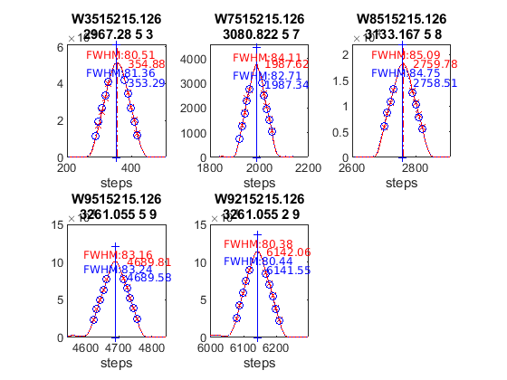 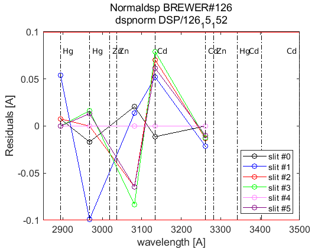 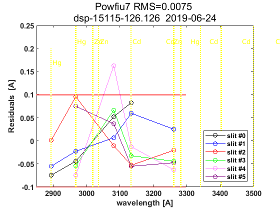 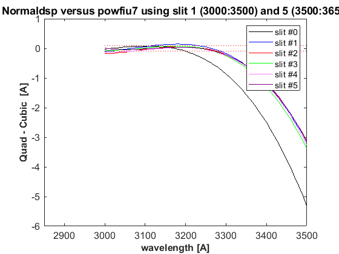 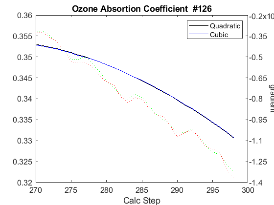
datefile =
736848
now:W1015317.126
now:W3015317.126
now:W7015317.126
now:W8015317.126
now:W1115317.126
now:W3115317.126
now:W7115317.126
now:W8115317.126
now:W9115317.126
now:W1215317.126
now:W3215317.126
now:W7215317.126
now:W8215317.126
now:W9215317.126
now:W3315317.126
now:W7315317.126
now:W8315317.126
now:W9315317.126
now:W3415317.126
now:W7415317.126
now:W8415317.126
now:W9415317.126
now:W3515317.126
now:W7515317.126
now:W8515317.126
now:W9515317.126
lines_dsp_15217__126
saving alldsp to DSP/126_17_153/alldsp_15217_126.126
saving normaldsp to DSP/126_17_153/dspnorm_15217_126.126 as brewer compatible file
Use polyval(pwl(2,:),wl) for calculating normal wavelengths
Saving ozonecoeffs to DSP/126_17_153/opos15217_126.126
281 WL(A) 3031.47 3062.56 3100.08 3134.65 3167.64 3199.61
Res(A) 11.52 11.22 11.30 11.25 11.18 11.00
O3abs(1/cm) 2.6155 1.7890 1.0065 0.6774 0.3751 0.2958 O3: 0.3456
Daumt O3abs(1/cm) 2.6225 1.7832 0.9986 0.6710 0.3684 0.2959 O3: 0.3557
So2abs(1/cm) 3.5584 5.4867 2.3722 1.9576 1.0484 0.6223
Bremen O3abs(1/cm) 2.6256 1.7867 1.0042 0.6805 0.3736 0.2971 O3: 0.3472
Nicolet 1e4*Rayabs(1/cm) 5053.8 4835.3 4587.4 4373.2 4180.6 4004.1 R: 10.5461
Bates(fix) 1e4*Rayabs(1/cm) 0.0 4870.0 4620.0 4410.0 4220.0 4040.0 R: -1.0000
Bodhaine 1e4*Rayabs(1/cm) 5050.3 4833.3 4586.9 4373.9 4182.2 4006.4 R: 10.1713
I0(mW m^-2nm^-1) 11712.60 9418.71 7319.42 4915.47 4059.41 3240.50 ETC: 1440
Ozone offset due to Rayleigh (RayCOeff/O3Coeff): -3.1 DU
Ozone offset due to Rayleigh (Bodhaine): -3.2 DU
Ratio Ozone for So2(A3)= 1.1603, So2/O3(A2)= 2.6501
O3 factor from Bass & Paur to Daumont = 0.9714
O3 factor from Bass & Paur to Bremen = 0.9952
282 WL(A) 3031.54 3062.63 3100.15 3134.72 3167.71 3199.68
Res(A) 11.52 11.22 11.30 11.25 11.18 11.00
O3abs(1/cm) 2.6129 1.7876 1.0062 0.6772 0.3751 0.2954 O3: 0.3446
Daumt O3abs(1/cm) 2.6199 1.7820 0.9983 0.6709 0.3684 0.2956 O3: 0.3549
So2abs(1/cm) 3.5393 5.5116 2.3788 1.9469 1.0495 0.6204
Bremen O3abs(1/cm) 2.6230 1.7853 1.0038 0.6804 0.3735 0.2968 O3: 0.3464
Nicolet 1e4*Rayabs(1/cm) 5053.3 4834.8 4587.0 4372.8 4180.2 4003.8 R: 10.5437
Bates(fix) 1e4*Rayabs(1/cm) 0.0 4870.0 4620.0 4410.0 4220.0 4040.0 R: -1.0000
Bodhaine 1e4*Rayabs(1/cm) 5049.8 4832.8 4586.5 4373.5 4181.8 4006.1 R: 10.1686
I0(mW m^-2nm^-1) 11706.88 9412.78 7298.15 4911.84 4050.20 3231.67 ETC: 1426
Ozone offset due to Rayleigh (RayCOeff/O3Coeff): -3.1 DU
Ozone offset due to Rayleigh (Bodhaine): -3.2 DU
Ratio Ozone for So2(A3)= 1.1576, So2/O3(A2)= 2.6682
O3 factor from Bass & Paur to Daumont = 0.9710
O3 factor from Bass & Paur to Bremen = 0.9948
283 WL(A) 3031.61 3062.70 3100.21 3134.79 3167.77 3199.75
Res(A) 11.51 11.22 11.30 11.25 11.18 11.00
O3abs(1/cm) 2.6103 1.7862 1.0059 0.6769 0.3751 0.2950 O3: 0.3437
Daumt O3abs(1/cm) 2.6173 1.7807 0.9979 0.6708 0.3684 0.2953 O3: 0.3541
So2abs(1/cm) 3.5217 5.5349 2.3854 1.9362 1.0507 0.6184
Bremen O3abs(1/cm) 2.6205 1.7839 1.0034 0.6803 0.3735 0.2965 O3: 0.3456
Nicolet 1e4*Rayabs(1/cm) 5052.8 4834.4 4586.6 4372.4 4179.8 4003.4 R: 10.5413
Bates(fix) 1e4*Rayabs(1/cm) 0.0 4870.0 4620.0 4410.0 4220.0 4040.0 R: -1.0000
Bodhaine 1e4*Rayabs(1/cm) 5049.3 4832.4 4586.1 4373.0 4181.4 4005.7 R: 10.1686
I0(mW m^-2nm^-1) 11701.16 9406.86 7276.98 4908.21 4041.00 3222.86 ETC: 1412
Ozone offset due to Rayleigh (RayCOeff/O3Coeff): -3.1 DU
Ozone offset due to Rayleigh (Bodhaine): -3.2 DU
Ratio Ozone for So2(A3)= 1.1549, So2/O3(A2)= 2.6850
O3 factor from Bass & Paur to Daumont = 0.9706
O3 factor from Bass & Paur to Bremen = 0.9946
284 WL(A) 3031.68 3062.77 3100.28 3134.86 3167.84 3199.81
Res(A) 11.51 11.22 11.30 11.25 11.18 11.00
O3abs(1/cm) 2.6077 1.7849 1.0056 0.6767 0.3751 0.2946 O3: 0.3428
Daumt O3abs(1/cm) 2.6147 1.7794 0.9975 0.6707 0.3684 0.2950 O3: 0.3533
So2abs(1/cm) 3.5047 5.5583 2.3923 1.9249 1.0518 0.6164
Bremen O3abs(1/cm) 2.6180 1.7825 1.0031 0.6801 0.3735 0.2962 O3: 0.3447
Nicolet 1e4*Rayabs(1/cm) 5052.3 4833.9 4586.1 4372.0 4179.4 4003.1 R: 10.5389
Bates(fix) 1e4*Rayabs(1/cm) 0.0 4870.0 4620.0 4410.0 4220.0 4040.0 R: -1.0000
Bodhaine 1e4*Rayabs(1/cm) 5048.8 4831.9 4585.6 4372.6 4181.0 4005.3 R: 10.1644
I0(mW m^-2nm^-1) 11695.46 9400.95 7255.91 4904.59 4031.82 3214.06 ETC: 1398
Ozone offset due to Rayleigh (RayCOeff/O3Coeff): -3.1 DU
Ozone offset due to Rayleigh (Bodhaine): -3.3 DU
Ratio Ozone for So2(A3)= 1.1520, So2/O3(A2)= 2.7021
O3 factor from Bass & Paur to Daumont = 0.9702
O3 factor from Bass & Paur to Bremen = 0.9944
285 WL(A) 3031.75 3062.84 3100.35 3134.92 3167.91 3199.88
Res(A) 11.51 11.22 11.30 11.25 11.18 11.00
O3abs(1/cm) 2.6051 1.7835 1.0053 0.6764 0.3752 0.2941 O3: 0.3418
Daumt O3abs(1/cm) 2.6121 1.7781 0.9971 0.6705 0.3684 0.2947 O3: 0.3524
So2abs(1/cm) 3.4879 5.5813 2.3996 1.9137 1.0530 0.6143
Bremen O3abs(1/cm) 2.6155 1.7811 1.0027 0.6799 0.3736 0.2958 O3: 0.3438
Nicolet 1e4*Rayabs(1/cm) 5051.8 4833.4 4585.7 4371.6 4179.1 4002.7 R: 10.5365
Bates(fix) 1e4*Rayabs(1/cm) 0.0 4870.0 4620.0 4410.0 4220.0 4040.0 R: -1.0000
Bodhaine 1e4*Rayabs(1/cm) 5048.3 4831.4 4585.2 4372.2 4180.6 4005.0 R: 10.1611
I0(mW m^-2nm^-1) 11689.76 9395.04 7234.94 4900.97 4022.66 3205.29 ETC: 1384
Ozone offset due to Rayleigh (RayCOeff/O3Coeff): -3.1 DU
Ozone offset due to Rayleigh (Bodhaine): -3.3 DU
Ratio Ozone for So2(A3)= 1.1491, So2/O3(A2)= 2.7192
O3 factor from Bass & Paur to Daumont = 0.9700
O3 factor from Bass & Paur to Bremen = 0.9943
286 WL(A) 3031.82 3062.91 3100.42 3134.99 3167.98 3199.94
Res(A) 11.51 11.22 11.30 11.25 11.18 11.00
O3abs(1/cm) 2.6026 1.7821 1.0050 0.6760 0.3752 0.2937 O3: 0.3409
Daumt O3abs(1/cm) 2.6096 1.7767 0.9968 0.6703 0.3684 0.2943 O3: 0.3515
So2abs(1/cm) 3.4713 5.6039 2.4070 1.9029 1.0541 0.6123
Bremen O3abs(1/cm) 2.6131 1.7797 1.0023 0.6797 0.3736 0.2954 O3: 0.3429
Nicolet 1e4*Rayabs(1/cm) 5051.3 4832.9 4585.2 4371.2 4178.7 4002.3 R: 10.5341
Bates(fix) 1e4*Rayabs(1/cm) 0.0 4870.0 4620.0 4410.0 4220.0 4040.0 R: -1.0000
Bodhaine 1e4*Rayabs(1/cm) 5047.8 4830.9 4584.8 4371.8 4180.3 4004.6 R: 10.1619
I0(mW m^-2nm^-1) 11684.07 9389.14 7214.07 4897.35 4013.52 3196.53 ETC: 1370
Ozone offset due to Rayleigh (RayCOeff/O3Coeff): -3.1 DU
Ozone offset due to Rayleigh (Bodhaine): -3.3 DU
Ratio Ozone for So2(A3)= 1.1461, So2/O3(A2)= 2.7360
O3 factor from Bass & Paur to Daumont = 0.9698
O3 factor from Bass & Paur to Bremen = 0.9942
287 WL(A) 3031.89 3062.98 3100.49 3135.06 3168.04 3200.01
Res(A) 11.51 11.22 11.30 11.25 11.18 11.00
O3abs(1/cm) 2.6002 1.7805 1.0047 0.6757 0.3752 0.2932 O3: 0.3399
Daumt O3abs(1/cm) 2.6071 1.7754 0.9964 0.6702 0.3684 0.2939 O3: 0.3505
So2abs(1/cm) 3.4556 5.6243 2.4144 1.8920 1.0553 0.6101
Bremen O3abs(1/cm) 2.6107 1.7783 1.0020 0.6795 0.3736 0.2951 O3: 0.3419
Nicolet 1e4*Rayabs(1/cm) 5050.8 4832.5 4584.8 4370.8 4178.3 4002.0 R: 10.5317
Bates(fix) 1e4*Rayabs(1/cm) 0.0 4870.0 4620.0 4410.0 4220.0 4040.0 R: -1.0000
Bodhaine 1e4*Rayabs(1/cm) 5047.3 4830.5 4584.3 4371.4 4179.9 4004.3 R: 10.1575
I0(mW m^-2nm^-1) 11678.38 9383.25 7193.29 4893.74 4004.40 3187.79 ETC: 1356
Ozone offset due to Rayleigh (RayCOeff/O3Coeff): -3.1 DU
Ozone offset due to Rayleigh (Bodhaine): -3.3 DU
Ratio Ozone for So2(A3)= 1.1429, So2/O3(A2)= 2.7514
O3 factor from Bass & Paur to Daumont = 0.9696
O3 factor from Bass & Paur to Bremen = 0.9941
288 WL(A) 3031.97 3063.05 3100.56 3135.13 3168.11 3200.08
Res(A) 11.51 11.22 11.30 11.25 11.18 11.00
O3abs(1/cm) 2.5978 1.7789 1.0044 0.6753 0.3752 0.2927 O3: 0.3388
Daumt O3abs(1/cm) 2.6046 1.7740 0.9961 0.6699 0.3685 0.2936 O3: 0.3495
So2abs(1/cm) 3.4409 5.6447 2.4218 1.8808 1.0564 0.6079
Bremen O3abs(1/cm) 2.6083 1.7768 1.0016 0.6792 0.3737 0.2947 O3: 0.3409
Nicolet 1e4*Rayabs(1/cm) 5050.2 4832.0 4584.4 4370.3 4177.9 4001.6 R: 10.5293
Bates(fix) 1e4*Rayabs(1/cm) 0.0 4870.0 4620.0 4410.0 4220.0 4040.0 R: -1.0000
Bodhaine 1e4*Rayabs(1/cm) 5046.8 4830.0 4583.9 4371.0 4179.5 4003.9 R: 10.1539
I0(mW m^-2nm^-1) 11672.71 9377.37 7172.62 4890.13 3995.29 3179.06 ETC: 1342
Ozone offset due to Rayleigh (RayCOeff/O3Coeff): -3.1 DU
Ozone offset due to Rayleigh (Bodhaine): -3.3 DU
Ratio Ozone for So2(A3)= 1.1396, So2/O3(A2)= 2.7670
O3 factor from Bass & Paur to Daumont = 0.9692
O3 factor from Bass & Paur to Bremen = 0.9938
289 WL(A) 3032.04 3063.12 3100.63 3135.20 3168.18 3200.14
Res(A) 11.51 11.22 11.30 11.25 11.18 11.00
O3abs(1/cm) 2.5954 1.7773 1.0040 0.6750 0.3753 0.2922 O3: 0.3376
Daumt O3abs(1/cm) 2.6022 1.7726 0.9957 0.6697 0.3685 0.2932 O3: 0.3485
So2abs(1/cm) 3.4265 5.6647 2.4298 1.8694 1.0575 0.6057
Bremen O3abs(1/cm) 2.6059 1.7753 1.0013 0.6789 0.3737 0.2942 O3: 0.3398
Nicolet 1e4*Rayabs(1/cm) 5049.7 4831.5 4583.9 4369.9 4177.5 4001.3 R: 10.5269
Bates(fix) 1e4*Rayabs(1/cm) 0.0 4870.0 4620.0 4410.0 4220.0 4040.0 R: -1.0000
Bodhaine 1e4*Rayabs(1/cm) 5046.3 4829.5 4583.4 4370.6 4179.1 4003.6 R: 10.1552
I0(mW m^-2nm^-1) 11667.04 9371.50 7152.04 4886.52 3986.21 3170.35 ETC: 1329
Ozone offset due to Rayleigh (RayCOeff/O3Coeff): -3.1 DU
Ozone offset due to Rayleigh (Bodhaine): -3.3 DU
Ratio Ozone for So2(A3)= 1.1361, So2/O3(A2)= 2.7828
O3 factor from Bass & Paur to Daumont = 0.9688
O3 factor from Bass & Paur to Bremen = 0.9935
290 WL(A) 3032.11 3063.19 3100.70 3135.26 3168.24 3200.21
Res(A) 11.51 11.22 11.30 11.25 11.18 11.00
O3abs(1/cm) 2.5929 1.7758 1.0037 0.6746 0.3754 0.2917 O3: 0.3365
Daumt O3abs(1/cm) 2.5998 1.7712 0.9953 0.6695 0.3685 0.2927 O3: 0.3475
So2abs(1/cm) 3.4124 5.6842 2.4379 1.8583 1.0586 0.6035
Bremen O3abs(1/cm) 2.6036 1.7738 1.0009 0.6786 0.3738 0.2938 O3: 0.3388
Nicolet 1e4*Rayabs(1/cm) 5049.2 4831.0 4583.5 4369.5 4177.2 4000.9 R: 10.5245
Bates(fix) 1e4*Rayabs(1/cm) 0.0 4870.0 4620.0 4410.0 4220.0 4040.0 R: -1.0000
Bodhaine 1e4*Rayabs(1/cm) 5045.8 4829.1 4583.0 4370.2 4178.7 4003.2 R: 10.1507
I0(mW m^-2nm^-1) 11661.37 9365.63 7137.24 4882.92 3977.14 3161.66 ETC: 1321
Ozone offset due to Rayleigh (RayCOeff/O3Coeff): -3.1 DU
Ozone offset due to Rayleigh (Bodhaine): -3.3 DU
Ratio Ozone for So2(A3)= 1.1327, So2/O3(A2)= 2.7982
O3 factor from Bass & Paur to Daumont = 0.9685
O3 factor from Bass & Paur to Bremen = 0.9934
291 WL(A) 3032.18 3063.26 3100.76 3135.33 3168.31 3200.28
Res(A) 11.51 11.22 11.30 11.25 11.18 11.00
O3abs(1/cm) 2.5905 1.7743 1.0035 0.6741 0.3755 0.2912 O3: 0.3354
Daumt O3abs(1/cm) 2.5974 1.7698 0.9950 0.6692 0.3686 0.2923 O3: 0.3464
So2abs(1/cm) 3.3988 5.7020 2.4461 1.8474 1.0597 0.6013
Bremen O3abs(1/cm) 2.6012 1.7723 1.0006 0.6783 0.3738 0.2934 O3: 0.3377
Nicolet 1e4*Rayabs(1/cm) 5048.7 4830.6 4583.0 4369.1 4176.8 4000.6 R: 10.5221
Bates(fix) 1e4*Rayabs(1/cm) 0.0 4870.0 4620.0 4410.0 4220.0 4040.0 R: -1.0000
Bodhaine 1e4*Rayabs(1/cm) 5045.3 4828.6 4582.6 4369.8 4178.4 4002.9 R: 10.1466
I0(mW m^-2nm^-1) 11655.72 9359.77 7124.25 4879.31 3968.09 3152.99 ETC: 1315
Ozone offset due to Rayleigh (RayCOeff/O3Coeff): -3.1 DU
Ozone offset due to Rayleigh (Bodhaine): -3.3 DU
Ratio Ozone for So2(A3)= 1.1291, So2/O3(A2)= 2.8124
O3 factor from Bass & Paur to Daumont = 0.9682
O3 factor from Bass & Paur to Bremen = 0.9932
saving powfiu7 to DSP/126_17_153/dsp_15217_126.126
freecoef =
4
freecoef =
9
freecoef =
9
freecoef =
9
freecoef =
9
freecoef =
9
freecoef =
9
freecoef =
9
freecoef =
9
freecoef =
9
saving data to file:DSP/126_17_153/dsp_15217_126.126
Use brstps2 to calculate steps and wavelengths
Saving ozonecoeffs to DSP/126_17_153/opos_pow7_15217_126.126
281 WL(A) 3031.50 3062.59 3100.06 3134.58 3167.53 3199.58
Res(A) 11.50 11.21 11.29 11.24 11.18 11.01
O3abs(1/cm) 2.6145 1.7884 1.0066 0.6776 0.3751 0.2960 O3: 0.3457
Daumt O3abs(1/cm) 2.6215 1.7827 0.9987 0.6711 0.3685 0.2961 O3: 0.3558
So2abs(1/cm) 3.5505 5.5006 2.3702 1.9694 1.0464 0.6233
Bremen O3abs(1/cm) 2.6246 1.7860 1.0043 0.6807 0.3736 0.2973 O3: 0.3473
Nicolet 1e4*Rayabs(1/cm) 5053.6 4835.1 4587.5 4373.6 4181.2 4004.3 R: 9.3649
Bates(fix) 1e4*Rayabs(1/cm) 0.0 4870.0 4620.0 4410.0 4220.0 4040.0 R: -1.0000
Bodhaine 1e4*Rayabs(1/cm) 5050.1 4833.1 4587.0 4374.3 4182.8 4006.6 R: 8.9951
I0(mW m^-2nm^-1) 11710.68 9415.79 7325.46 4919.36 4074.78 3245.19 ETC: 1418
Ozone offset due to Rayleigh (RayCOeff/O3Coeff): -2.7 DU
Ozone offset due to Rayleigh (Bodhaine): -2.9 DU
Ratio Ozone for So2(A3)= 1.1601, So2/O3(A2)= 2.6725
O3 factor from Bass & Paur to Daumont = 0.9718
O3 factor from Bass & Paur to Bremen = 0.9954
282 WL(A) 3031.57 3062.66 3100.13 3134.65 3167.60 3199.64
Res(A) 11.50 11.21 11.29 11.24 11.18 11.01
O3abs(1/cm) 2.6119 1.7870 1.0062 0.6774 0.3751 0.2956 O3: 0.3449
Daumt O3abs(1/cm) 2.6189 1.7814 0.9983 0.6710 0.3684 0.2958 O3: 0.3551
So2abs(1/cm) 3.5319 5.5243 2.3769 1.9586 1.0476 0.6214
Bremen O3abs(1/cm) 2.6220 1.7847 1.0039 0.6806 0.3736 0.2970 O3: 0.3466
Nicolet 1e4*Rayabs(1/cm) 5053.1 4834.6 4587.1 4373.2 4180.8 4004.0 R: 9.3626
Bates(fix) 1e4*Rayabs(1/cm) 0.0 4870.0 4620.0 4410.0 4220.0 4040.0 R: -1.0000
Bodhaine 1e4*Rayabs(1/cm) 5049.6 4832.6 4586.6 4373.9 4182.4 4006.2 R: 8.9943
I0(mW m^-2nm^-1) 11704.96 9409.86 7304.11 4915.72 4065.54 3236.37 ETC: 1404
Ozone offset due to Rayleigh (RayCOeff/O3Coeff): -2.7 DU
Ozone offset due to Rayleigh (Bodhaine): -2.9 DU
Ratio Ozone for So2(A3)= 1.1576, So2/O3(A2)= 2.6890
O3 factor from Bass & Paur to Daumont = 0.9714
O3 factor from Bass & Paur to Bremen = 0.9952
283 WL(A) 3031.64 3062.73 3100.20 3134.71 3167.66 3199.71
Res(A) 11.50 11.21 11.28 11.24 11.18 11.01
O3abs(1/cm) 2.6093 1.7856 1.0060 0.6772 0.3751 0.2952 O3: 0.3440
Daumt O3abs(1/cm) 2.6163 1.7801 0.9980 0.6709 0.3684 0.2955 O3: 0.3543
So2abs(1/cm) 3.5146 5.5477 2.3835 1.9478 1.0487 0.6194
Bremen O3abs(1/cm) 2.6195 1.7833 1.0035 0.6805 0.3736 0.2967 O3: 0.3458
Nicolet 1e4*Rayabs(1/cm) 5052.6 4834.1 4586.7 4372.8 4180.5 4003.6 R: 9.3604
Bates(fix) 1e4*Rayabs(1/cm) 0.0 4870.0 4620.0 4410.0 4220.0 4040.0 R: -1.0000
Bodhaine 1e4*Rayabs(1/cm) 5049.1 4832.1 4586.2 4373.5 4182.0 4005.9 R: 8.9924
I0(mW m^-2nm^-1) 11699.24 9403.93 7282.85 4912.09 4056.31 3227.57 ETC: 1390
Ozone offset due to Rayleigh (RayCOeff/O3Coeff): -2.7 DU
Ozone offset due to Rayleigh (Bodhaine): -2.9 DU
Ratio Ozone for So2(A3)= 1.1550, So2/O3(A2)= 2.7057
O3 factor from Bass & Paur to Daumont = 0.9710
O3 factor from Bass & Paur to Bremen = 0.9949
284 WL(A) 3031.71 3062.80 3100.27 3134.78 3167.73 3199.78
Res(A) 11.50 11.21 11.28 11.24 11.18 11.01
O3abs(1/cm) 2.6067 1.7843 1.0057 0.6770 0.3751 0.2948 O3: 0.3431
Daumt O3abs(1/cm) 2.6137 1.7788 0.9976 0.6708 0.3684 0.2952 O3: 0.3535
So2abs(1/cm) 3.4977 5.5710 2.3902 1.9371 1.0499 0.6174
Bremen O3abs(1/cm) 2.6171 1.7819 1.0032 0.6803 0.3735 0.2963 O3: 0.3450
Nicolet 1e4*Rayabs(1/cm) 5052.1 4833.7 4586.2 4372.4 4180.1 4003.2 R: 9.3582
Bates(fix) 1e4*Rayabs(1/cm) 0.0 4870.0 4620.0 4410.0 4220.0 4040.0 R: -1.0000
Bodhaine 1e4*Rayabs(1/cm) 5048.6 4831.7 4585.7 4373.1 4181.6 4005.5 R: 8.9885
I0(mW m^-2nm^-1) 11693.53 9398.01 7261.70 4908.46 4047.10 3218.79 ETC: 1376
Ozone offset due to Rayleigh (RayCOeff/O3Coeff): -2.7 DU
Ozone offset due to Rayleigh (Bodhaine): -2.9 DU
Ratio Ozone for So2(A3)= 1.1522, So2/O3(A2)= 2.7226
O3 factor from Bass & Paur to Daumont = 0.9707
O3 factor from Bass & Paur to Bremen = 0.9947
285 WL(A) 3031.78 3062.87 3100.33 3134.85 3167.80 3199.84
Res(A) 11.50 11.21 11.28 11.24 11.18 11.01
O3abs(1/cm) 2.6042 1.7829 1.0054 0.6767 0.3751 0.2944 O3: 0.3422
Daumt O3abs(1/cm) 2.6112 1.7775 0.9972 0.6707 0.3684 0.2948 O3: 0.3527
So2abs(1/cm) 3.4809 5.5939 2.3974 1.9259 1.0511 0.6154
Bremen O3abs(1/cm) 2.6146 1.7805 1.0028 0.6801 0.3735 0.2960 O3: 0.3441
Nicolet 1e4*Rayabs(1/cm) 5051.6 4833.2 4585.8 4372.0 4179.7 4002.9 R: 9.3559
Bates(fix) 1e4*Rayabs(1/cm) 0.0 4870.0 4620.0 4410.0 4220.0 4040.0 R: -1.0000
Bodhaine 1e4*Rayabs(1/cm) 5048.1 4831.2 4585.3 4372.7 4181.3 4005.2 R: 8.9875
I0(mW m^-2nm^-1) 11687.83 9392.10 7240.65 4904.83 4037.91 3210.02 ETC: 1362
Ozone offset due to Rayleigh (RayCOeff/O3Coeff): -2.7 DU
Ozone offset due to Rayleigh (Bodhaine): -2.9 DU
Ratio Ozone for So2(A3)= 1.1493, So2/O3(A2)= 2.7396
O3 factor from Bass & Paur to Daumont = 0.9703
O3 factor from Bass & Paur to Bremen = 0.9944
286 WL(A) 3031.85 3062.94 3100.40 3134.92 3167.86 3199.91
Res(A) 11.50 11.20 11.28 11.23 11.18 11.01
O3abs(1/cm) 2.6017 1.7814 1.0051 0.6764 0.3751 0.2939 O3: 0.3412
Daumt O3abs(1/cm) 2.6087 1.7761 0.9969 0.6705 0.3684 0.2945 O3: 0.3518
So2abs(1/cm) 3.4643 5.6152 2.4048 1.9147 1.0522 0.6133
Bremen O3abs(1/cm) 2.6122 1.7790 1.0024 0.6800 0.3735 0.2956 O3: 0.3432
Nicolet 1e4*Rayabs(1/cm) 5051.1 4832.7 4585.4 4371.6 4179.3 4002.5 R: 9.3537
Bates(fix) 1e4*Rayabs(1/cm) 0.0 4870.0 4620.0 4410.0 4220.0 4040.0 R: -1.0000
Bodhaine 1e4*Rayabs(1/cm) 5047.6 4830.7 4584.9 4372.3 4180.9 4004.8 R: 8.9860
I0(mW m^-2nm^-1) 11682.14 9386.20 7219.70 4901.20 4028.74 3201.27 ETC: 1348
Ozone offset due to Rayleigh (RayCOeff/O3Coeff): -2.7 DU
Ozone offset due to Rayleigh (Bodhaine): -2.9 DU
Ratio Ozone for So2(A3)= 1.1462, So2/O3(A2)= 2.7555
O3 factor from Bass & Paur to Daumont = 0.9699
O3 factor from Bass & Paur to Bremen = 0.9942
287 WL(A) 3031.92 3063.01 3100.47 3134.99 3167.93 3199.98
Res(A) 11.50 11.20 11.28 11.23 11.18 11.01
O3abs(1/cm) 2.5993 1.7798 1.0048 0.6761 0.3752 0.2934 O3: 0.3402
Daumt O3abs(1/cm) 2.6062 1.7748 0.9965 0.6704 0.3684 0.2941 O3: 0.3509
So2abs(1/cm) 3.4495 5.6355 2.4122 1.9038 1.0534 0.6112
Bremen O3abs(1/cm) 2.6098 1.7776 1.0021 0.6797 0.3736 0.2952 O3: 0.3423
Nicolet 1e4*Rayabs(1/cm) 5050.6 4832.2 4584.9 4371.2 4178.9 4002.2 R: 9.3515
Bates(fix) 1e4*Rayabs(1/cm) 0.0 4870.0 4620.0 4410.0 4220.0 4040.0 R: -1.0000
Bodhaine 1e4*Rayabs(1/cm) 5047.1 4830.3 4584.4 4371.9 4180.5 4004.5 R: 8.9822
I0(mW m^-2nm^-1) 11676.45 9380.31 7198.84 4897.58 4019.59 3192.53 ETC: 1334
Ozone offset due to Rayleigh (RayCOeff/O3Coeff): -2.7 DU
Ozone offset due to Rayleigh (Bodhaine): -2.9 DU
Ratio Ozone for So2(A3)= 1.1431, So2/O3(A2)= 2.7708
O3 factor from Bass & Paur to Daumont = 0.9696
O3 factor from Bass & Paur to Bremen = 0.9941
288 WL(A) 3031.99 3063.08 3100.54 3135.05 3168.00 3200.04
Res(A) 11.50 11.20 11.28 11.23 11.18 11.01
O3abs(1/cm) 2.5969 1.7782 1.0044 0.6757 0.3752 0.2930 O3: 0.3392
Daumt O3abs(1/cm) 2.6037 1.7734 0.9962 0.6702 0.3684 0.2937 O3: 0.3499
So2abs(1/cm) 3.4349 5.6559 2.4196 1.8929 1.0545 0.6090
Bremen O3abs(1/cm) 2.6074 1.7761 1.0017 0.6795 0.3736 0.2948 O3: 0.3413
Nicolet 1e4*Rayabs(1/cm) 5050.1 4831.8 4584.5 4370.8 4178.6 4001.8 R: 9.3493
Bates(fix) 1e4*Rayabs(1/cm) 0.0 4870.0 4620.0 4410.0 4220.0 4040.0 R: -1.0000
Bodhaine 1e4*Rayabs(1/cm) 5046.6 4829.8 4584.0 4371.5 4180.1 4004.1 R: 8.9806
I0(mW m^-2nm^-1) 11670.77 9374.42 7178.09 4893.96 4010.46 3183.82 ETC: 1321
Ozone offset due to Rayleigh (RayCOeff/O3Coeff): -2.8 DU
Ozone offset due to Rayleigh (Bodhaine): -2.9 DU
Ratio Ozone for So2(A3)= 1.1398, So2/O3(A2)= 2.7863
O3 factor from Bass & Paur to Daumont = 0.9693
O3 factor from Bass & Paur to Bremen = 0.9938
289 WL(A) 3032.06 3063.15 3100.61 3135.12 3168.07 3200.11
Res(A) 11.50 11.20 11.28 11.23 11.18 11.01
O3abs(1/cm) 2.5944 1.7766 1.0041 0.6754 0.3752 0.2925 O3: 0.3381
Daumt O3abs(1/cm) 2.6013 1.7720 0.9958 0.6700 0.3684 0.2933 O3: 0.3489
So2abs(1/cm) 3.4205 5.6757 2.4274 1.8818 1.0556 0.6068
Bremen O3abs(1/cm) 2.6050 1.7746 1.0014 0.6793 0.3736 0.2944 O3: 0.3403
Nicolet 1e4*Rayabs(1/cm) 5049.6 4831.3 4584.0 4370.4 4178.2 4001.5 R: 9.3470
Bates(fix) 1e4*Rayabs(1/cm) 0.0 4870.0 4620.0 4410.0 4220.0 4040.0 R: -1.0000
Bodhaine 1e4*Rayabs(1/cm) 5046.1 4829.3 4583.6 4371.1 4179.7 4003.8 R: 8.9795
I0(mW m^-2nm^-1) 11665.09 9368.54 7157.43 4890.34 4001.35 3175.12 ETC: 1307
Ozone offset due to Rayleigh (RayCOeff/O3Coeff): -2.8 DU
Ozone offset due to Rayleigh (Bodhaine): -3.0 DU
Ratio Ozone for So2(A3)= 1.1366, So2/O3(A2)= 2.8014
O3 factor from Bass & Paur to Daumont = 0.9690
O3 factor from Bass & Paur to Bremen = 0.9937
290 WL(A) 3032.13 3063.22 3100.68 3135.19 3168.13 3200.17
Res(A) 11.50 11.20 11.28 11.23 11.18 11.01
O3abs(1/cm) 2.5920 1.7751 1.0038 0.6750 0.3753 0.2920 O3: 0.3370
Daumt O3abs(1/cm) 2.5989 1.7706 0.9954 0.6698 0.3685 0.2929 O3: 0.3479
So2abs(1/cm) 3.4064 5.6945 2.4355 1.8704 1.0568 0.6047
Bremen O3abs(1/cm) 2.6027 1.7731 1.0010 0.6790 0.3737 0.2940 O3: 0.3392
Nicolet 1e4*Rayabs(1/cm) 5049.0 4830.8 4583.6 4370.0 4177.8 4001.1 R: 9.3448
Bates(fix) 1e4*Rayabs(1/cm) 0.0 4870.0 4620.0 4410.0 4220.0 4040.0 R: -1.0000
Bodhaine 1e4*Rayabs(1/cm) 5045.6 4828.8 4583.1 4370.6 4179.4 4003.4 R: 8.9759
I0(mW m^-2nm^-1) 11659.43 9362.67 7141.45 4886.73 3992.25 3166.44 ETC: 1298
Ozone offset due to Rayleigh (RayCOeff/O3Coeff): -2.8 DU
Ozone offset due to Rayleigh (Bodhaine): -3.0 DU
Ratio Ozone for So2(A3)= 1.1332, So2/O3(A2)= 2.8158
O3 factor from Bass & Paur to Daumont = 0.9687
O3 factor from Bass & Paur to Bremen = 0.9935
291 WL(A) 3032.20 3063.29 3100.75 3135.26 3168.20 3200.24
Res(A) 11.50 11.20 11.28 11.23 11.18 11.01
O3abs(1/cm) 2.5896 1.7736 1.0035 0.6746 0.3753 0.2914 O3: 0.3359
Daumt O3abs(1/cm) 2.5965 1.7691 0.9951 0.6695 0.3685 0.2925 O3: 0.3469
So2abs(1/cm) 3.3936 5.7116 2.4437 1.8593 1.0579 0.6024
Bremen O3abs(1/cm) 2.6004 1.7716 1.0007 0.6787 0.3737 0.2936 O3: 0.3382
Nicolet 1e4*Rayabs(1/cm) 5048.5 4830.3 4583.2 4369.6 4177.4 4000.8 R: 9.3426
Bates(fix) 1e4*Rayabs(1/cm) 0.0 4870.0 4620.0 4410.0 4220.0 4040.0 R: -1.0000
Bodhaine 1e4*Rayabs(1/cm) 5045.1 4828.4 4582.7 4370.2 4179.0 4003.1 R: 8.9743
I0(mW m^-2nm^-1) 11653.77 9356.81 7129.16 4883.12 3983.18 3157.77 ETC: 1293
Ozone offset due to Rayleigh (RayCOeff/O3Coeff): -2.8 DU
Ozone offset due to Rayleigh (Bodhaine): -3.0 DU
Ratio Ozone for So2(A3)= 1.1298, So2/O3(A2)= 2.8290
O3 factor from Bass & Paur to Daumont = 0.9685
O3 factor from Bass & Paur to Bremen = 0.9934
Warning: The EraseMode property is no longer supported and will error
in a future release.
Warning: The EraseMode property is no longer supported and will error
in a future release.
Warning: The EraseMode property is no longer supported and will error
in a future release.
Warning: The EraseMode property is no longer supported and will error
in a future release.
Warning: The EraseMode property is no longer supported and will error
in a future release.
Warning: The EraseMode property is no longer supported and will error
in a future release.
Warning: The EraseMode property is no longer supported and will error
in a future release.
Warning: The EraseMode property is no longer supported and will error
in a future release.
Warning: The EraseMode property is no longer supported and will error
in a future release.
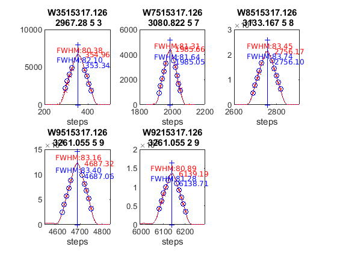 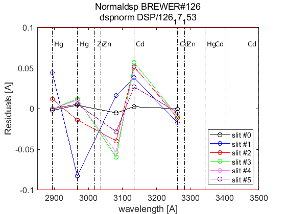 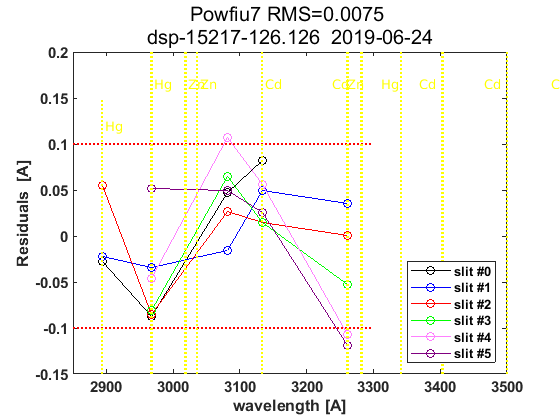 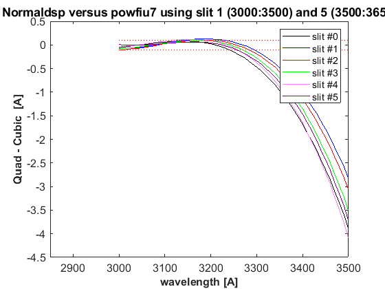 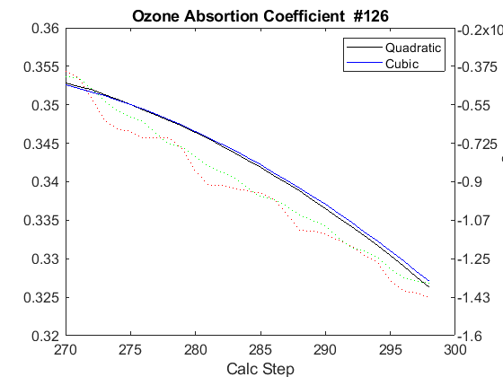
datefile =
737595
now:W1016919.126
now:W3016919.126
now:W7016919.126
now:W8016919.126
now:W1116919.126
now:W3116919.126
now:W7116919.126
now:W8116919.126
now:W9116919.126
now:W1216919.126
now:W3216919.126
now:W7216919.126
now:W8216919.126
now:W9216919.126
now:W3316919.126
now:W7316919.126
now:W8316919.126
now:W9316919.126
now:W3416919.126
now:W7416919.126
now:W8416919.126
now:W9416919.126
now:W3516919.126
now:W7516919.126
now:W8516919.126
now:W9516919.126
lines_dsp_16919__126
saving alldsp to DSP/126_19_170/alldsp_16919_126.126
saving normaldsp to DSP/126_19_170/dspnorm_16919_126.126 as brewer compatible file
Use polyval(pwl(2,:),wl) for calculating normal wavelengths
Saving ozonecoeffs to DSP/126_19_170/opos16919_126.126
286 WL(A) 3031.63 3062.72 3100.20 3134.69 3167.70 3199.67
Res(A) 11.12 11.24 10.87 11.67 11.07 10.69
O3abs(1/cm) 2.6087 1.7858 1.0061 0.6761 0.3750 0.2962 O3: 0.3467
Daumt O3abs(1/cm) 2.6158 1.7802 0.9979 0.6699 0.3682 0.2963 O3: 0.3565
So2abs(1/cm) 3.4977 5.5416 2.3761 1.9494 1.0495 0.6220
Bremen O3abs(1/cm) 2.6191 1.7834 1.0035 0.6794 0.3734 0.2975 O3: 0.3480
Nicolet 1e4*Rayabs(1/cm) 5052.7 4834.2 4586.6 4373.0 4180.2 4003.8 R: 10.1486
Bates(fix) 1e4*Rayabs(1/cm) 0.0 4870.0 4620.0 4410.0 4220.0 4040.0 R: -1.0000
Bodhaine 1e4*Rayabs(1/cm) 5049.2 4832.2 4586.2 4373.6 4181.8 4006.1 R: 9.7726
I0(mW m^-2nm^-1) 11704.83 9404.95 7298.62 4914.77 4050.44 3233.41 ETC: 1427
Ozone offset due to Rayleigh (RayCOeff/O3Coeff): -2.9 DU
Ozone offset due to Rayleigh (Bodhaine): -3.1 DU
Ratio Ozone for So2(A3)= 1.1587, So2/O3(A2)= 2.6960
O3 factor from Bass & Paur to Daumont = 0.9724
O3 factor from Bass & Paur to Bremen = 0.9962
287 WL(A) 3031.70 3062.79 3100.27 3134.76 3167.77 3199.73
Res(A) 11.12 11.24 10.87 11.67 11.07 10.69
O3abs(1/cm) 2.6063 1.7844 1.0058 0.6758 0.3750 0.2958 O3: 0.3457
Daumt O3abs(1/cm) 2.6132 1.7789 0.9975 0.6698 0.3682 0.2960 O3: 0.3558
So2abs(1/cm) 3.4804 5.5648 2.3832 1.9387 1.0507 0.6199
Bremen O3abs(1/cm) 2.6167 1.7820 1.0031 0.6793 0.3734 0.2972 O3: 0.3472
Nicolet 1e4*Rayabs(1/cm) 5052.2 4833.7 4586.2 4372.6 4179.9 4003.5 R: 10.1460
Bates(fix) 1e4*Rayabs(1/cm) 0.0 4870.0 4620.0 4410.0 4220.0 4040.0 R: -1.0000
Bodhaine 1e4*Rayabs(1/cm) 5048.7 4831.7 4585.7 4373.2 4181.4 4005.8 R: 9.7681
I0(mW m^-2nm^-1) 11698.75 9399.05 7275.10 4911.47 4041.08 3223.87 ETC: 1410
Ozone offset due to Rayleigh (RayCOeff/O3Coeff): -2.9 DU
Ozone offset due to Rayleigh (Bodhaine): -3.1 DU
Ratio Ozone for So2(A3)= 1.1558, So2/O3(A2)= 2.7128
O3 factor from Bass & Paur to Daumont = 0.9717
O3 factor from Bass & Paur to Bremen = 0.9956
288 WL(A) 3031.77 3062.86 3100.34 3134.83 3167.84 3199.80
Res(A) 11.12 11.24 10.87 11.67 11.07 10.69
O3abs(1/cm) 2.6038 1.7830 1.0055 0.6755 0.3750 0.2953 O3: 0.3447
Daumt O3abs(1/cm) 2.6107 1.7776 0.9972 0.6696 0.3682 0.2957 O3: 0.3550
So2abs(1/cm) 3.4642 5.5876 2.3903 1.9280 1.0519 0.6179
Bremen O3abs(1/cm) 2.6142 1.7806 1.0028 0.6791 0.3734 0.2968 O3: 0.3464
Nicolet 1e4*Rayabs(1/cm) 5051.7 4833.3 4585.8 4372.1 4179.5 4003.1 R: 10.1435
Bates(fix) 1e4*Rayabs(1/cm) 0.0 4870.0 4620.0 4410.0 4220.0 4040.0 R: -1.0000
Bodhaine 1e4*Rayabs(1/cm) 5048.2 4831.3 4585.3 4372.8 4181.0 4005.4 R: 9.7691
I0(mW m^-2nm^-1) 11692.68 9393.16 7251.69 4908.17 4031.73 3214.35 ETC: 1392
Ozone offset due to Rayleigh (RayCOeff/O3Coeff): -2.9 DU
Ozone offset due to Rayleigh (Bodhaine): -3.1 DU
Ratio Ozone for So2(A3)= 1.1529, So2/O3(A2)= 2.7296
O3 factor from Bass & Paur to Daumont = 0.9711
O3 factor from Bass & Paur to Bremen = 0.9952
289 WL(A) 3031.84 3062.93 3100.41 3134.90 3167.90 3199.87
Res(A) 11.12 11.24 10.87 11.67 11.07 10.69
O3abs(1/cm) 2.6013 1.7815 1.0052 0.6752 0.3750 0.2948 O3: 0.3438
Daumt O3abs(1/cm) 2.6082 1.7763 0.9969 0.6695 0.3682 0.2954 O3: 0.3542
So2abs(1/cm) 3.4480 5.6096 2.3974 1.9174 1.0530 0.6159
Bremen O3abs(1/cm) 2.6118 1.7792 1.0025 0.6789 0.3734 0.2965 O3: 0.3456
Nicolet 1e4*Rayabs(1/cm) 5051.2 4832.8 4585.3 4371.7 4179.1 4002.8 R: 10.1409
Bates(fix) 1e4*Rayabs(1/cm) 0.0 4870.0 4620.0 4410.0 4220.0 4040.0 R: -1.0000
Bodhaine 1e4*Rayabs(1/cm) 5047.7 4830.8 4584.8 4372.4 4180.7 4005.1 R: 9.7653
I0(mW m^-2nm^-1) 11686.62 9387.28 7228.42 4904.87 4022.41 3204.84 ETC: 1375
Ozone offset due to Rayleigh (RayCOeff/O3Coeff): -3.0 DU
Ozone offset due to Rayleigh (Bodhaine): -3.1 DU
Ratio Ozone for So2(A3)= 1.1498, So2/O3(A2)= 2.7463
O3 factor from Bass & Paur to Daumont = 0.9706
O3 factor from Bass & Paur to Bremen = 0.9948
290 WL(A) 3031.91 3063.00 3100.48 3134.96 3167.97 3199.93
Res(A) 11.12 11.24 10.87 11.67 11.07 10.69
O3abs(1/cm) 2.5989 1.7799 1.0050 0.6749 0.3751 0.2944 O3: 0.3428
Daumt O3abs(1/cm) 2.6057 1.7749 0.9966 0.6693 0.3682 0.2950 O3: 0.3533
So2abs(1/cm) 3.4318 5.6299 2.4047 1.9066 1.0542 0.6137
Bremen O3abs(1/cm) 2.6094 1.7777 1.0021 0.6787 0.3734 0.2961 O3: 0.3447
Nicolet 1e4*Rayabs(1/cm) 5050.7 4832.3 4584.9 4371.3 4178.7 4002.4 R: 10.1384
Bates(fix) 1e4*Rayabs(1/cm) 0.0 4870.0 4620.0 4410.0 4220.0 4040.0 R: -1.0000
Bodhaine 1e4*Rayabs(1/cm) 5047.2 4830.3 4584.4 4372.0 4180.3 4004.7 R: 9.7604
I0(mW m^-2nm^-1) 11680.56 9381.41 7210.72 4901.58 4013.10 3195.36 ETC: 1363
Ozone offset due to Rayleigh (RayCOeff/O3Coeff): -3.0 DU
Ozone offset due to Rayleigh (Bodhaine): -3.1 DU
Ratio Ozone for So2(A3)= 1.1466, So2/O3(A2)= 2.7613
O3 factor from Bass & Paur to Daumont = 0.9703
O3 factor from Bass & Paur to Bremen = 0.9947
291 WL(A) 3031.98 3063.07 3100.54 3135.03 3168.04 3200.00
Res(A) 11.12 11.24 10.87 11.67 11.07 10.69
O3abs(1/cm) 2.5964 1.7783 1.0047 0.6746 0.3751 0.2939 O3: 0.3419
Daumt O3abs(1/cm) 2.6032 1.7735 0.9962 0.6691 0.3683 0.2947 O3: 0.3524
So2abs(1/cm) 3.4163 5.6502 2.4126 1.8957 1.0553 0.6116
Bremen O3abs(1/cm) 2.6070 1.7763 1.0018 0.6784 0.3735 0.2958 O3: 0.3437
Nicolet 1e4*Rayabs(1/cm) 5050.2 4831.8 4584.4 4370.9 4178.3 4002.0 R: 10.1358
Bates(fix) 1e4*Rayabs(1/cm) 0.0 4870.0 4620.0 4410.0 4220.0 4040.0 R: -1.0000
Bodhaine 1e4*Rayabs(1/cm) 5046.7 4829.8 4584.0 4371.6 4179.9 4004.3 R: 9.7621
I0(mW m^-2nm^-1) 11674.51 9375.54 7196.79 4898.28 4003.82 3185.89 ETC: 1355
Ozone offset due to Rayleigh (RayCOeff/O3Coeff): -3.0 DU
Ozone offset due to Rayleigh (Bodhaine): -3.1 DU
Ratio Ozone for So2(A3)= 1.1435, So2/O3(A2)= 2.7765
O3 factor from Bass & Paur to Daumont = 0.9702
O3 factor from Bass & Paur to Bremen = 0.9947
292 WL(A) 3032.05 3063.14 3100.61 3135.10 3168.10 3200.07
Res(A) 11.12 11.24 10.87 11.67 11.07 10.69
O3abs(1/cm) 2.5938 1.7767 1.0045 0.6742 0.3752 0.2935 O3: 0.3409
Daumt O3abs(1/cm) 2.6008 1.7721 0.9959 0.6689 0.3683 0.2943 O3: 0.3515
So2abs(1/cm) 3.4026 5.6699 2.4204 1.8848 1.0565 0.6095
Bremen O3abs(1/cm) 2.6046 1.7748 1.0015 0.6782 0.3735 0.2954 O3: 0.3428
Nicolet 1e4*Rayabs(1/cm) 5049.7 4831.4 4584.0 4370.5 4178.0 4001.7 R: 10.1333
Bates(fix) 1e4*Rayabs(1/cm) 0.0 4870.0 4620.0 4410.0 4220.0 4040.0 R: -1.0000
Bodhaine 1e4*Rayabs(1/cm) 5046.2 4829.4 4583.5 4371.2 4179.5 4004.0 R: 9.7578
I0(mW m^-2nm^-1) 11668.48 9369.68 7183.24 4894.99 3994.55 3176.45 ETC: 1348
Ozone offset due to Rayleigh (RayCOeff/O3Coeff): -3.0 DU
Ozone offset due to Rayleigh (Bodhaine): -3.2 DU
Ratio Ozone for So2(A3)= 1.1402, So2/O3(A2)= 2.7916
O3 factor from Bass & Paur to Daumont = 0.9699
O3 factor from Bass & Paur to Bremen = 0.9945
293 WL(A) 3032.12 3063.21 3100.68 3135.17 3168.17 3200.13
Res(A) 11.12 11.24 10.87 11.67 11.07 10.69
O3abs(1/cm) 2.5914 1.7753 1.0042 0.6739 0.3752 0.2930 O3: 0.3398
Daumt O3abs(1/cm) 2.5984 1.7707 0.9956 0.6686 0.3684 0.2939 O3: 0.3505
So2abs(1/cm) 3.3888 5.6891 2.4284 1.8741 1.0576 0.6073
Bremen O3abs(1/cm) 2.6023 1.7733 1.0012 0.6779 0.3736 0.2950 O3: 0.3418
Nicolet 1e4*Rayabs(1/cm) 5049.1 4830.9 4583.6 4370.1 4177.6 4001.3 R: 10.1307
Bates(fix) 1e4*Rayabs(1/cm) 0.0 4870.0 4620.0 4410.0 4220.0 4040.0 R: -1.0000
Bodhaine 1e4*Rayabs(1/cm) 5045.7 4828.9 4583.1 4370.8 4179.2 4003.6 R: 9.7528
I0(mW m^-2nm^-1) 11662.45 9363.83 7170.04 4891.70 3985.31 3167.02 ETC: 1340
Ozone offset due to Rayleigh (RayCOeff/O3Coeff): -3.0 DU
Ozone offset due to Rayleigh (Bodhaine): -3.2 DU
Ratio Ozone for So2(A3)= 1.1370, So2/O3(A2)= 2.8060
O3 factor from Bass & Paur to Daumont = 0.9697
O3 factor from Bass & Paur to Bremen = 0.9944
294 WL(A) 3032.19 3063.28 3100.75 3135.24 3168.24 3200.20
Res(A) 11.12 11.24 10.87 11.67 11.07 10.69
O3abs(1/cm) 2.5891 1.7738 1.0039 0.6735 0.3753 0.2925 O3: 0.3387
Daumt O3abs(1/cm) 2.5960 1.7693 0.9953 0.6684 0.3684 0.2935 O3: 0.3495
So2abs(1/cm) 3.3751 5.7065 2.4363 1.8632 1.0587 0.6050
Bremen O3abs(1/cm) 2.6000 1.7718 1.0008 0.6776 0.3737 0.2946 O3: 0.3407
Nicolet 1e4*Rayabs(1/cm) 5048.6 4830.4 4583.1 4369.7 4177.2 4001.0 R: 10.1281
Bates(fix) 1e4*Rayabs(1/cm) 0.0 4870.0 4620.0 4410.0 4220.0 4040.0 R: -1.0000
Bodhaine 1e4*Rayabs(1/cm) 5045.2 4828.4 4582.7 4370.4 4178.8 4003.3 R: 9.7550
I0(mW m^-2nm^-1) 11656.42 9357.99 7155.11 4888.42 3976.08 3157.61 ETC: 1331
Ozone offset due to Rayleigh (RayCOeff/O3Coeff): -3.0 DU
Ozone offset due to Rayleigh (Bodhaine): -3.2 DU
Ratio Ozone for So2(A3)= 1.1335, So2/O3(A2)= 2.8195
O3 factor from Bass & Paur to Daumont = 0.9692
O3 factor from Bass & Paur to Bremen = 0.9941
295 WL(A) 3032.26 3063.35 3100.82 3135.30 3168.31 3200.26
Res(A) 11.12 11.24 10.87 11.67 11.07 10.69
O3abs(1/cm) 2.5868 1.7722 1.0036 0.6731 0.3754 0.2919 O3: 0.3375
Daumt O3abs(1/cm) 2.5936 1.7678 0.9949 0.6681 0.3685 0.2931 O3: 0.3484
So2abs(1/cm) 3.3615 5.7235 2.4448 1.8522 1.0598 0.6027
Bremen O3abs(1/cm) 2.5977 1.7702 1.0005 0.6773 0.3737 0.2941 O3: 0.3396
Nicolet 1e4*Rayabs(1/cm) 5048.1 4829.9 4582.7 4369.3 4176.8 4000.6 R: 10.1256
Bates(fix) 1e4*Rayabs(1/cm) 0.0 4870.0 4620.0 4410.0 4220.0 4040.0 R: -1.0000
Bodhaine 1e4*Rayabs(1/cm) 5044.7 4828.0 4582.2 4370.0 4178.4 4002.9 R: 9.7504
I0(mW m^-2nm^-1) 11650.41 9352.15 7139.17 4885.13 3966.87 3148.23 ETC: 1321
Ozone offset due to Rayleigh (RayCOeff/O3Coeff): -3.0 DU
Ozone offset due to Rayleigh (Bodhaine): -3.2 DU
Ratio Ozone for So2(A3)= 1.1298, So2/O3(A2)= 2.8333
O3 factor from Bass & Paur to Daumont = 0.9686
O3 factor from Bass & Paur to Bremen = 0.9936
296 WL(A) 3032.33 3063.42 3100.89 3135.37 3168.37 3200.33
Res(A) 11.12 11.24 10.87 11.66 11.07 10.69
O3abs(1/cm) 2.5845 1.7706 1.0032 0.6726 0.3755 0.2914 O3: 0.3362
Daumt O3abs(1/cm) 2.5913 1.7664 0.9946 0.6678 0.3686 0.2926 O3: 0.3473
So2abs(1/cm) 3.3502 5.7401 2.4534 1.8412 1.0609 0.6004
Bremen O3abs(1/cm) 2.5955 1.7686 1.0002 0.6769 0.3738 0.2937 O3: 0.3385
Nicolet 1e4*Rayabs(1/cm) 5047.6 4829.5 4582.3 4368.9 4176.4 4000.3 R: 10.1230
Bates(fix) 1e4*Rayabs(1/cm) 0.0 4870.0 4620.0 4410.0 4220.0 4040.0 R: -1.0000
Bodhaine 1e4*Rayabs(1/cm) 5044.2 4827.5 4581.8 4369.6 4178.0 4002.6 R: 9.7453
I0(mW m^-2nm^-1) 11644.40 9346.33 7123.28 4881.85 3957.68 3138.86 ETC: 1312
Ozone offset due to Rayleigh (RayCOeff/O3Coeff): -3.0 DU
Ozone offset due to Rayleigh (Bodhaine): -3.2 DU
Ratio Ozone for So2(A3)= 1.1260, So2/O3(A2)= 2.8471
O3 factor from Bass & Paur to Daumont = 0.9681
O3 factor from Bass & Paur to Bremen = 0.9932
saving powfiu7 to DSP/126_19_170/dsp_16919_126.126
freecoef =
4
freecoef =
9
freecoef =
9
freecoef =
9
freecoef =
9
freecoef =
9
freecoef =
9
freecoef =
9
freecoef =
9
freecoef =
9
saving data to file:DSP/126_19_170/dsp_16919_126.126
Use brstps2 to calculate steps and wavelengths
Saving ozonecoeffs to DSP/126_19_170/opos_pow7_16919_126.126
286 WL(A) 3031.64 3062.73 3100.18 3134.67 3167.66 3199.61
Res(A) 11.11 11.22 10.85 11.66 11.07 10.70
O3abs(1/cm) 2.6084 1.7857 1.0062 0.6762 0.3750 0.2965 O3: 0.3472
Daumt O3abs(1/cm) 2.6154 1.7801 0.9980 0.6699 0.3682 0.2965 O3: 0.3570
So2abs(1/cm) 3.4946 5.5448 2.3740 1.9525 1.0488 0.6238
Bremen O3abs(1/cm) 2.6188 1.7833 1.0036 0.6795 0.3734 0.2977 O3: 0.3485
Nicolet 1e4*Rayabs(1/cm) 5052.6 4834.2 4586.8 4373.1 4180.5 4004.2 R: 10.2436
Bates(fix) 1e4*Rayabs(1/cm) 0.0 4870.0 4620.0 4410.0 4220.0 4040.0 R: -1.0000
Bodhaine 1e4*Rayabs(1/cm) 5049.2 4832.2 4586.3 4373.7 4182.0 4006.4 R: 9.8657
I0(mW m^-2nm^-1) 11704.11 9404.38 7305.17 4915.69 4056.27 3239.18 ETC: 1430
Ozone offset due to Rayleigh (RayCOeff/O3Coeff): -2.9 DU
Ozone offset due to Rayleigh (Bodhaine): -3.1 DU
Ratio Ozone for So2(A3)= 1.1597, So2/O3(A2)= 2.7042
O3 factor from Bass & Paur to Daumont = 0.9728
O3 factor from Bass & Paur to Bremen = 0.9964
287 WL(A) 3031.71 3062.80 3100.25 3134.74 3167.73 3199.67
Res(A) 11.11 11.22 10.85 11.66 11.07 10.70
O3abs(1/cm) 2.6059 1.7843 1.0059 0.6759 0.3750 0.2962 O3: 0.3464
Daumt O3abs(1/cm) 2.6129 1.7788 0.9976 0.6698 0.3682 0.2963 O3: 0.3563
So2abs(1/cm) 3.4777 5.5681 2.3811 1.9418 1.0500 0.6218
Bremen O3abs(1/cm) 2.6163 1.7820 1.0032 0.6793 0.3734 0.2974 O3: 0.3478
Nicolet 1e4*Rayabs(1/cm) 5052.1 4833.7 4586.3 4372.7 4180.1 4003.8 R: 10.2413
Bates(fix) 1e4*Rayabs(1/cm) 0.0 4870.0 4620.0 4410.0 4220.0 4040.0 R: -1.0000
Bodhaine 1e4*Rayabs(1/cm) 5048.7 4831.7 4585.8 4373.3 4181.7 4006.1 R: 9.8671
I0(mW m^-2nm^-1) 11698.03 9398.48 7281.56 4912.38 4046.90 3232.76 ETC: 1418
Ozone offset due to Rayleigh (RayCOeff/O3Coeff): -3.0 DU
Ozone offset due to Rayleigh (Bodhaine): -3.1 DU
Ratio Ozone for So2(A3)= 1.1571, So2/O3(A2)= 2.7206
O3 factor from Bass & Paur to Daumont = 0.9724
O3 factor from Bass & Paur to Bremen = 0.9962
288 WL(A) 3031.78 3062.87 3100.32 3134.81 3167.79 3199.74
Res(A) 11.11 11.22 10.85 11.66 11.07 10.70
O3abs(1/cm) 2.6034 1.7829 1.0056 0.6756 0.3750 0.2957 O3: 0.3455
Daumt O3abs(1/cm) 2.6103 1.7775 0.9973 0.6697 0.3682 0.2960 O3: 0.3555
So2abs(1/cm) 3.4615 5.5909 2.3882 1.9311 1.0511 0.6198
Bremen O3abs(1/cm) 2.6139 1.7805 1.0029 0.6792 0.3734 0.2971 O3: 0.3470
Nicolet 1e4*Rayabs(1/cm) 5051.6 4833.2 4585.9 4372.3 4179.7 4003.4 R: 10.2389
Bates(fix) 1e4*Rayabs(1/cm) 0.0 4870.0 4620.0 4410.0 4220.0 4040.0 R: -1.0000
Bodhaine 1e4*Rayabs(1/cm) 5048.1 4831.2 4585.4 4372.9 4181.3 4005.7 R: 9.8612
I0(mW m^-2nm^-1) 11691.95 9392.59 7258.07 4909.08 4037.54 3223.22 ETC: 1400
Ozone offset due to Rayleigh (RayCOeff/O3Coeff): -3.0 DU
Ozone offset due to Rayleigh (Bodhaine): -3.1 DU
Ratio Ozone for So2(A3)= 1.1542, So2/O3(A2)= 2.7372
O3 factor from Bass & Paur to Daumont = 0.9718
O3 factor from Bass & Paur to Bremen = 0.9957
289 WL(A) 3031.85 3062.94 3100.39 3134.88 3167.86 3199.80
Res(A) 11.11 11.22 10.85 11.66 11.07 10.70
O3abs(1/cm) 2.6010 1.7814 1.0053 0.6753 0.3750 0.2953 O3: 0.3445
Daumt O3abs(1/cm) 2.6078 1.7762 0.9970 0.6695 0.3682 0.2957 O3: 0.3547
So2abs(1/cm) 3.4453 5.6125 2.3954 1.9206 1.0523 0.6177
Bremen O3abs(1/cm) 2.6114 1.7791 1.0026 0.6790 0.3734 0.2968 O3: 0.3462
Nicolet 1e4*Rayabs(1/cm) 5051.1 4832.7 4585.4 4371.9 4179.3 4003.1 R: 10.2366
Bates(fix) 1e4*Rayabs(1/cm) 0.0 4870.0 4620.0 4410.0 4220.0 4040.0 R: -1.0000
Bodhaine 1e4*Rayabs(1/cm) 5047.6 4830.8 4585.0 4372.5 4180.9 4005.4 R: 9.8585
I0(mW m^-2nm^-1) 11685.88 9386.70 7234.71 4905.77 4028.20 3213.71 ETC: 1383
Ozone offset due to Rayleigh (RayCOeff/O3Coeff): -3.0 DU
Ozone offset due to Rayleigh (Bodhaine): -3.2 DU
Ratio Ozone for So2(A3)= 1.1511, So2/O3(A2)= 2.7534
O3 factor from Bass & Paur to Daumont = 0.9712
O3 factor from Bass & Paur to Bremen = 0.9953
290 WL(A) 3031.92 3063.01 3100.46 3134.95 3167.93 3199.87
Res(A) 11.11 11.22 10.85 11.66 11.07 10.70
O3abs(1/cm) 2.5985 1.7798 1.0050 0.6750 0.3751 0.2948 O3: 0.3436
Daumt O3abs(1/cm) 2.6053 1.7748 0.9966 0.6694 0.3682 0.2953 O3: 0.3539
So2abs(1/cm) 3.4291 5.6328 2.4026 1.9097 1.0535 0.6157
Bremen O3abs(1/cm) 2.6090 1.7777 1.0022 0.6788 0.3734 0.2965 O3: 0.3453
Nicolet 1e4*Rayabs(1/cm) 5050.6 4832.3 4585.0 4371.4 4179.0 4002.7 R: 10.2342
Bates(fix) 1e4*Rayabs(1/cm) 0.0 4870.0 4620.0 4410.0 4220.0 4040.0 R: -1.0000
Bodhaine 1e4*Rayabs(1/cm) 5047.1 4830.3 4584.5 4372.1 4180.5 4005.0 R: 9.8607
I0(mW m^-2nm^-1) 11679.83 9380.82 7215.54 4902.47 4018.88 3204.21 ETC: 1370
Ozone offset due to Rayleigh (RayCOeff/O3Coeff): -3.0 DU
Ozone offset due to Rayleigh (Bodhaine): -3.2 DU
Ratio Ozone for So2(A3)= 1.1479, So2/O3(A2)= 2.7689
O3 factor from Bass & Paur to Daumont = 0.9708
O3 factor from Bass & Paur to Bremen = 0.9950
291 WL(A) 3031.99 3063.08 3100.53 3135.01 3168.00 3199.94
Res(A) 11.11 11.22 10.85 11.66 11.07 10.70
O3abs(1/cm) 2.5960 1.7782 1.0048 0.6747 0.3751 0.2943 O3: 0.3427
Daumt O3abs(1/cm) 2.6029 1.7734 0.9963 0.6692 0.3683 0.2950 O3: 0.3530
So2abs(1/cm) 3.4140 5.6531 2.4103 1.8988 1.0546 0.6136
Bremen O3abs(1/cm) 2.6067 1.7762 1.0019 0.6785 0.3735 0.2961 O3: 0.3444
Nicolet 1e4*Rayabs(1/cm) 5050.1 4831.8 4584.6 4371.0 4178.6 4002.4 R: 10.2319
Bates(fix) 1e4*Rayabs(1/cm) 0.0 4870.0 4620.0 4410.0 4220.0 4040.0 R: -1.0000
Bodhaine 1e4*Rayabs(1/cm) 5046.6 4829.8 4584.1 4371.7 4180.1 4004.7 R: 9.8542
I0(mW m^-2nm^-1) 11673.78 9374.95 7201.48 4899.18 4009.59 3194.74 ETC: 1362
Ozone offset due to Rayleigh (RayCOeff/O3Coeff): -3.0 DU
Ozone offset due to Rayleigh (Bodhaine): -3.2 DU
Ratio Ozone for So2(A3)= 1.1448, So2/O3(A2)= 2.7840
O3 factor from Bass & Paur to Daumont = 0.9706
O3 factor from Bass & Paur to Bremen = 0.9950
292 WL(A) 3032.06 3063.14 3100.60 3135.08 3168.06 3200.00
Res(A) 11.11 11.22 10.85 11.66 11.07 10.70
O3abs(1/cm) 2.5934 1.7767 1.0046 0.6744 0.3751 0.2939 O3: 0.3417
Daumt O3abs(1/cm) 2.6004 1.7720 0.9960 0.6690 0.3683 0.2946 O3: 0.3521
So2abs(1/cm) 3.4002 5.6729 2.4181 1.8880 1.0558 0.6114
Bremen O3abs(1/cm) 2.6043 1.7747 1.0016 0.6783 0.3735 0.2957 O3: 0.3435
Nicolet 1e4*Rayabs(1/cm) 5049.6 4831.3 4584.1 4370.6 4178.2 4002.0 R: 10.2295
Bates(fix) 1e4*Rayabs(1/cm) 0.0 4870.0 4620.0 4410.0 4220.0 4040.0 R: -1.0000
Bodhaine 1e4*Rayabs(1/cm) 5046.1 4829.3 4583.6 4371.3 4179.8 4004.3 R: 9.8514
I0(mW m^-2nm^-1) 11667.73 9369.08 7187.80 4895.88 4000.31 3185.28 ETC: 1354
Ozone offset due to Rayleigh (RayCOeff/O3Coeff): -3.0 DU
Ozone offset due to Rayleigh (Bodhaine): -3.2 DU
Ratio Ozone for So2(A3)= 1.1416, So2/O3(A2)= 2.7989
O3 factor from Bass & Paur to Daumont = 0.9704
O3 factor from Bass & Paur to Bremen = 0.9949
293 WL(A) 3032.13 3063.21 3100.66 3135.15 3168.13 3200.07
Res(A) 11.11 11.22 10.85 11.66 11.07 10.70
O3abs(1/cm) 2.5911 1.7752 1.0043 0.6740 0.3752 0.2934 O3: 0.3407
Daumt O3abs(1/cm) 2.5980 1.7706 0.9957 0.6687 0.3683 0.2943 O3: 0.3512
So2abs(1/cm) 3.3865 5.6920 2.4261 1.8772 1.0569 0.6093
Bremen O3abs(1/cm) 2.6020 1.7732 1.0013 0.6780 0.3736 0.2953 O3: 0.3425
Nicolet 1e4*Rayabs(1/cm) 5049.1 4830.8 4583.7 4370.2 4177.8 4001.7 R: 10.2272
Bates(fix) 1e4*Rayabs(1/cm) 0.0 4870.0 4620.0 4410.0 4220.0 4040.0 R: -1.0000
Bodhaine 1e4*Rayabs(1/cm) 5045.6 4828.9 4583.2 4370.9 4179.4 4004.0 R: 9.8543
I0(mW m^-2nm^-1) 11661.70 9363.23 7174.48 4892.59 3991.05 3175.84 ETC: 1347
Ozone offset due to Rayleigh (RayCOeff/O3Coeff): -3.0 DU
Ozone offset due to Rayleigh (Bodhaine): -3.2 DU
Ratio Ozone for So2(A3)= 1.1384, So2/O3(A2)= 2.8133
O3 factor from Bass & Paur to Daumont = 0.9700
O3 factor from Bass & Paur to Bremen = 0.9946
294 WL(A) 3032.20 3063.28 3100.73 3135.22 3168.20 3200.14
Res(A) 11.11 11.22 10.85 11.66 11.07 10.69
O3abs(1/cm) 2.5888 1.7737 1.0040 0.6737 0.3753 0.2930 O3: 0.3396
Daumt O3abs(1/cm) 2.5957 1.7692 0.9953 0.6685 0.3684 0.2939 O3: 0.3502
So2abs(1/cm) 3.3727 5.7091 2.4340 1.8664 1.0580 0.6071
Bremen O3abs(1/cm) 2.5997 1.7717 1.0009 0.6777 0.3736 0.2949 O3: 0.3415
Nicolet 1e4*Rayabs(1/cm) 5048.6 4830.4 4583.2 4369.8 4177.4 4001.3 R: 10.2248
Bates(fix) 1e4*Rayabs(1/cm) 0.0 4870.0 4620.0 4410.0 4220.0 4040.0 R: -1.0000
Bodhaine 1e4*Rayabs(1/cm) 5045.1 4828.4 4582.8 4370.5 4179.0 4003.6 R: 9.8479
I0(mW m^-2nm^-1) 11655.67 9357.38 7160.25 4889.30 3981.81 3166.42 ETC: 1339
Ozone offset due to Rayleigh (RayCOeff/O3Coeff): -3.0 DU
Ozone offset due to Rayleigh (Bodhaine): -3.2 DU
Ratio Ozone for So2(A3)= 1.1352, So2/O3(A2)= 2.8261
O3 factor from Bass & Paur to Daumont = 0.9698
O3 factor from Bass & Paur to Bremen = 0.9946
295 WL(A) 3032.27 3063.35 3100.80 3135.28 3168.26 3200.20
Res(A) 11.11 11.22 10.85 11.66 11.07 10.69
O3abs(1/cm) 2.5865 1.7722 1.0036 0.6732 0.3753 0.2925 O3: 0.3385
Daumt O3abs(1/cm) 2.5933 1.7678 0.9950 0.6682 0.3685 0.2935 O3: 0.3492
So2abs(1/cm) 3.3595 5.7261 2.4423 1.8554 1.0591 0.6049
Bremen O3abs(1/cm) 2.5974 1.7701 1.0006 0.6774 0.3737 0.2945 O3: 0.3405
Nicolet 1e4*Rayabs(1/cm) 5048.1 4829.9 4582.8 4369.4 4177.1 4001.0 R: 10.2225
Bates(fix) 1e4*Rayabs(1/cm) 0.0 4870.0 4620.0 4410.0 4220.0 4040.0 R: -1.0000
Bodhaine 1e4*Rayabs(1/cm) 5044.6 4827.9 4582.3 4370.1 4178.6 4003.3 R: 9.8443
I0(mW m^-2nm^-1) 11649.66 9351.53 7144.26 4886.01 3972.60 3157.02 ETC: 1328
Ozone offset due to Rayleigh (RayCOeff/O3Coeff): -3.0 DU
Ozone offset due to Rayleigh (Bodhaine): -3.2 DU
Ratio Ozone for So2(A3)= 1.1316, So2/O3(A2)= 2.8396
O3 factor from Bass & Paur to Daumont = 0.9693
O3 factor from Bass & Paur to Bremen = 0.9942
296 WL(A) 3032.34 3063.42 3100.87 3135.35 3168.33 3200.27
Res(A) 11.11 11.22 10.85 11.66 11.07 10.69
O3abs(1/cm) 2.5842 1.7705 1.0033 0.6727 0.3754 0.2919 O3: 0.3372
Daumt O3abs(1/cm) 2.5910 1.7663 0.9947 0.6679 0.3685 0.2930 O3: 0.3481
So2abs(1/cm) 3.3482 5.7428 2.4509 1.8444 1.0602 0.6025
Bremen O3abs(1/cm) 2.5951 1.7686 1.0003 0.6771 0.3738 0.2941 O3: 0.3394
Nicolet 1e4*Rayabs(1/cm) 5047.6 4829.4 4582.4 4369.0 4176.7 4000.6 R: 10.2201
Bates(fix) 1e4*Rayabs(1/cm) 0.0 4870.0 4620.0 4410.0 4220.0 4040.0 R: -1.0000
Bodhaine 1e4*Rayabs(1/cm) 5044.1 4827.5 4581.9 4369.7 4178.3 4002.9 R: 9.8480
I0(mW m^-2nm^-1) 11643.65 9345.70 7128.34 4882.72 3963.40 3147.64 ETC: 1318
Ozone offset due to Rayleigh (RayCOeff/O3Coeff): -3.0 DU
Ozone offset due to Rayleigh (Bodhaine): -3.2 DU
Ratio Ozone for So2(A3)= 1.1278, So2/O3(A2)= 2.8533
O3 factor from Bass & Paur to Daumont = 0.9687
O3 factor from Bass & Paur to Bremen = 0.9937
Warning: The EraseMode property is no longer supported and will error
in a future release.
Warning: The EraseMode property is no longer supported and will error
in a future release.
Warning: The EraseMode property is no longer supported and will error
in a future release.
Warning: The EraseMode property is no longer supported and will error
in a future release.
Warning: The EraseMode property is no longer supported and will error
in a future release.
Warning: The EraseMode property is no longer supported and will error
in a future release.
Warning: The EraseMode property is no longer supported and will error
in a future release.
Warning: The EraseMode property is no longer supported and will error
in a future release.
Warning: The EraseMode property is no longer supported and will error
in a future release.
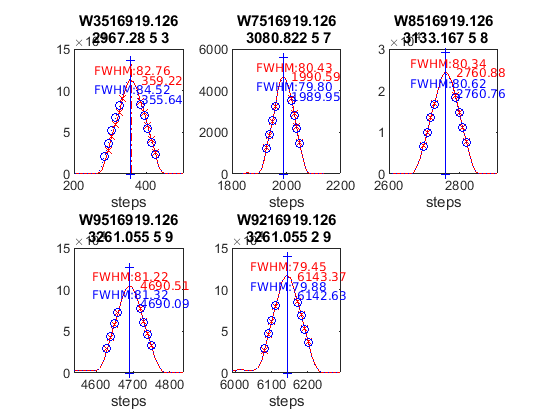 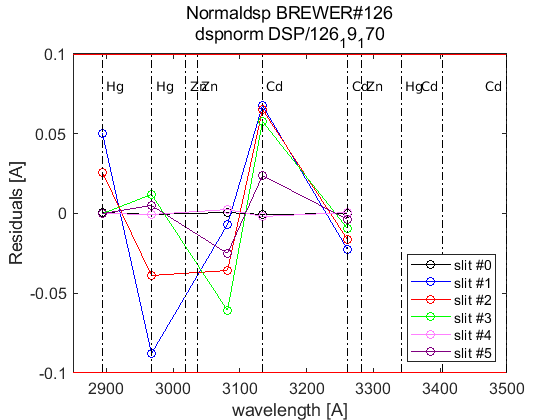
end
load(Cal.file_save,'dsp_summary');
dates=sscanf(cell2str(cat(2,ldsp')),'%03d_%03d_%03d,',[3,Inf]);
dates=datejul(dates(2:3,:)');dates=dates(:,1);
dsp_summary{Cal.n_inst}.info=cellstr(datestr(dates))';
dsp_summary{Cal.n_inst}.res=res;
dsp_summary{Cal.n_inst}.detail=detail;
dsp_summary{Cal.n_inst}.salida=salida;
save(Cal.file_save,'-APPEND','dsp_summary');
ldsp =
4×1 cell array
{'126_13_166'}
{'126_15_152'}
{'126_17_153'}
{'126_19_170'}
ix=sort(findobj('tag','DSP_QUAD_RES'));
printfiles_report(ix',Cal.dir_figs,'aux_pattern',ix);
close all
naux =
1
figura =
'126_figures_DSP_QUAD_RES_1'
naux =
2
figura =
'126_figures_DSP_QUAD_RES_2'
naux =
3
figura =
'126_figures_DSP_QUAD_RES_3'
naux =
4
Tabla - resumen con resultados DSP y Umkehr
QUAD_SUM_table={}; rows={}; tabla_QuadSum={}; format short g;
if config_orig(14)~=config_def(14)
idx=1:length(res)+1; idx(end-1)=0; idx(end)=length(res);
for t=[1:length(res)-1,length(res)+1]
tabla_QuadSum{t}=num2cell(round(res{idx(t)}(end-1,:,1)*10^4)/10^4);
end
old_step=num2cell(round(res{length(res)}(res{length(res)}(:,1,1)==config_orig(14),:,1)*10^4)/10^4)
if ~isempty(old_step)
tabla_QuadSum{length(res)}=old_step(1,:);
else
disp('step too far')
tabla_QuadSum{length(res)}= num2cell([config_orig(14),NaN*ones(1,8)]);
end
Q_SUM_table_RowLabels={'Current',dsp_summary{Cal.n_inst}.info{:},dsp_summary{Cal.n_inst}.info{end},'Final'};
else
for t=1:length(res)
tabla_QuadSum{t}=num2cell(round(res{t}(end-1,:,1)*10^4)/10^4);
end
Q_SUM_table_RowLabels={'Current',dsp_summary{Cal.n_inst}.info{:},'Final'};
end
tabla_QuadSum_str=cat(1,tabla_QuadSum{:});
data_ini=cellfun(@(x) (round(x(:,1)*10^4))/10^4,{config_orig(8),config_orig(9),config_orig(10)},'UniformOutput',false);
data_fin=cellfun(@(x) (round(x(:,1)*10^4))/10^4,{config_def(8),config_def(9),config_def(10)},'UniformOutput',false);
QUAD_SUM_table=[{config_orig(14),data_ini{:}}
tabla_QuadSum_str(:,[1 2 4 5])
{config_def(14),data_fin{:}}];
disp([Q_SUM_table_RowLabels',QUAD_SUM_table]);
label_1={'slit\#0','slit\#1','slit\#2','slit\#3','slit\#4','slit\#5'};
UMK_TABLE={};
for um=1:length(res)
steps_umk=res{um}(end-1:end,1,1);
UMK_TABLE{um}=[];
for iumk=1:2
label_2={sprintf('step= %d ',fix(steps_umk(iumk)));'WL(A)';'Res(A)';'O3abs(1/cm)';'Ray abs(1/cm)'};
if iumk==2, dumk=0; else dumk=iumk; end
data=[label_2,[label_1;num2cell([round(detail{um}(1,:,end-dumk,1));detail{um}(2:4,:,end-dumk,1)])]];
UMK_TABLE{um}=[UMK_TABLE{um};data];
end
end
old_step =
1×9 cell array
Columns 1 through 5
{[286]} {[0.3467]} {[10.149]} {[3.1239]} {[1.1587]}
Columns 6 through 9
{[1427.1]} {[0.3565]} {[0.348]} {[9.7726]}
'Current' [286] [0.3435] [ 2.35] [1.1514]
'15-Jun-2013' [286] [0.3483] [3.1068] [1.1631]
'01-Jun-2015' [286] [0.3435] [3.1108] [1.1533]
'02-Jun-2017' [286] [0.3409] [3.1357] [1.1461]
'19-Jun-2019' [286] [0.3467] [3.1239] [1.1587]
'19-Jun-2019' [291] [0.3419] [3.1749] [1.1435]
'Final' [291] [0.3435] [ 2.35] [1.1514]
Tablas y ficheros de definiciones latex
indx=1;
for t=1:length(res)
if t==1 indx=[]; else indx=t-1; end
matrix2latex_QDETAIL(QUAD_DETAIL{t},...
fullfile(Cal.file_latex,['table_QDETAIL',num2str(indx),'_',Cal.brw_str{Cal.n_inst},'.tex']),...
'alignment','c','resize',0.9,'size','footnotesize');
matrix2latex_ctable(UMK_TABLE{t},...
fullfile(Cal.file_latex,['table_UMK',num2str(indx),'_',Cal.brw_str{Cal.n_inst},'.tex']),...
'alignment','c','resize',0.9,'size','footnotesize');
end
matrix2latex_ctable(QUAD_SUM_table,fullfile(Cal.file_latex,['table_dsp','_',Cal.brw_str{Cal.n_inst},'.tex']),...
'Columnlabels',{'Calc-step', 'O3abs coeff.', 'SO2abs coeff.', 'O3/SO2'},...
'RowLabels', Q_SUM_table_RowLabels,'alignment', 'c',...
'resize',0.8,'format',{'%d','%6.4f','%6.4f','%6.4f'},'size','footnotesize');
if length(res)>1
d_p=[length(res)-1 length(res)]; tags={'','new'};
else
d_p=1; tags={'new'};
end
idx=1;
for t=d_p
latexcmd(fullfile(Cal.file_latex,['cal_wavelengthDSP',tags{idx},'_',Cal.brw_str{Cal.n_inst}]),...
['\Auno',tags{idx}],round(res{t}(end-1,2,1)*10000)/10000,...
['\Ados',tags{idx}],round(res{t}(end-1,4,1)*10000)/10000,...
['\Atres',tags{idx}],round(res{t}(end-1,5,1)*10000)/10000,...
['\UMKoffset',tags{idx}],fix(res{t}(end,1)));
idx=idx+1;
end
r=cell2mat(res');
r=reshape(r,15,[],9,2);
mq=round(median(squeeze(r(7,:,:,1)))*10000)/10000;
mc=round(median(squeeze(r(7,:,:,2)))*10000)/10000;
q=round((squeeze(r(7,end,:,1)))*10000)/10000;
c=round((squeeze(r(7,end,:,2)))*10000)/10000;
figure;
plot(dates,squeeze(r(7,:,2,1)),'r:o'); hold on
plot(dates,squeeze(r(7,:,2,2)),'b:+')
hline(mq(:,2),':r',sprintf(' %.4f ',mq));
hline(mc(:,2),':b',sprintf(' %.4f ',mq));
hline(q(2),'-r',sprintf(' %.4f ',q(2)));
hline(c(2),'-b',sprintf(' %.4f ',c(2)));
legend('quad','cubic')
datetick;
grid
title([Cal.brw_name(Cal.n_inst),sprintf('A1= %.4f / %.4f',[A1orig(1),A1def(1)])])
Eto para escribir resultados a hoja excel.
for dsps=1:length(ldsp)
legend1={'step',sprintf('ICF (%d, %d)',CSN_icf{dsps}(1),CSN_icf{dsps}(3)),'abs step','A1 Q','A1 S'};
dsp_table=NaN*ones(9,size(legend1,2));
dsp_table(:,1:5)=[res{dsps}(:,1,1),NaN*ones(9,1),res{dsps}(:,1,1)+salida{dsps}{1}.cal_ozonepos,...
res{dsps}(:,2,1)*10000,res{dsps}(:,2,2)*10000];
dsp_table(end-1,2)=CSN_icf{dsps}(2)*10000; aux=round(dsp_table); aux(:,[2 4 5])=aux(:,[2 4 5])/10000;
aux=[legend1;num2cell(aux)];
cell2str(aux,'\t')
xlswrite('./DSP/dsp_todo.xls',ldsp(dsps),Cal.brw_name{Cal.n_inst},['A',num2str(1+(dsps-1)*11)]);
xlswrite('./DSP/dsp_todo.xls',aux,Cal.brw_name{Cal.n_inst},['B',num2str(1+(dsps-1)*11)]);
end
xlswrite('./DSP/dsp_IZO2.xls',[Q_SUM_table_RowLabels',QUAD_SUM_table],[Cal.brw_name{Cal.n_inst},'_sum']);